- 发帖数量：19 条（星主 Jason不跪，「只看星主」口径；其中 1 条带 PDF 附件，其余为文字 + 图片，共 35 张图）
- 时间范围（美西，PDT）：2026-10-20 00:03 — 2026-10-20 15:35（对应北京时间 10-20 15:03 — 10-21 06:35）
- 本期范围：晚于上次收录（北京时间 2026-10-20 09:37:43）的全部新帖
今日要点速览
今天的主线是「利率与债务」：中国这边是内需偏弱、上游涨价传不到消费端、地方债务和财政吃紧；美日那边是长端利率升到多年高位（美债 10 年期约 5.07%，日本 20 年期国债收益率约 3.9%），而 AI 正在改写资金流向和美元的“安全资产”角色。 帖子里大量引用了野村、摩根士丹利、摩根大通、长江证券、东吴证券、粤开证券、彭文生和彭博的研报与文章，大致可以串成三条线：（1）中国经济“数字好看、体感偏冷”——GDP 小幅上修，但电商、新能源车订单、社零、PPI-CPI 剪刀差都在说需求不足；（2）政策和金融框架在悄悄换挡——央行把短端利率锚从 7 天改成隔夜、社保欠缴首次有全国统一的罚款标准、实际利率比美国还高；（3）全球层面，美债收益率重新跟着油价走、日本国债终于有人接盘、新兴市场股票相对美股便宜到 2006 年以来最低。最后两条是八卦（李莉/东旭系）和一条地方政府欠债新闻，算是宏观大叙事下的“人间切片”。
阅读提示：本期很多数字来自研报截图，图里小字我尽量逐项核对；凡是“目测读数”都会标注“约”。帖里涉及 2026 年的事件与数据，我只按帖子和图片本身转述，没有独立核实。
帖 1 · 美西 2026-10-20 00:03（北京 10-20 15:03）· #八卦#
一条半开玩笑的“八卦”：配图是《自由的窄廊》（The Narrow Corridor）的书封，暗示某人“看了这本书改变了命运”。帖子本身没有宏观数据。读全文收起
帖子原文
说王文灵是看了这本书改变了命运😂 #八卦#

背景与关键数据
- 帖里提到的“王文灵”是谁、他/她的“命运”具体指什么，帖子没有交代，我也无法核实，所以不做推测。
- 书的信息可以确定：封面是繁体中文版《自由的窄廊：国家与社会如何决定自由的命运》（衛城出版，“诺贝尔经济学奖新修订版”），作者是戴伦·艾塞默鲁（Daron Acemoglu）与詹姆斯·罗宾逊（James A. Robinson）。封面上的徽章写着“2024 诺贝尔经济学奖得主”——这两位和西蒙·约翰逊（Simon Johnson）因“制度如何影响国家繁荣”的研究共同获得了 2024 年诺奖。
图片解读
图 1：书封。左侧红黑两条“管道”交汇处写着 POWER OF THE STATE（国家的力量）与 POWER OF SOCIETY（社会的力量），中间那条窄窄的通道就是书名里的“窄廊”。封面文案“自由的关键，原来是制衡！”点出了全书核心。
为什么重要 / 含义
这条对市场没有直接含义，更像群内的“调剂”。但这本书恰好和今天后面很多帖子（地方政府欠债、央行改框架、美债与美元地位）共享一个底层问题：国家能力与社会制衡如何影响经济的长期走向。
延伸知识
《自由的窄廊》的核心框架：只有当国家权力和社会权力“势均力敌、同步成长”时，社会才进入“窄廊”，个人自由与经济繁荣才可能同时出现。国家太强是“专制利维坦”，国家太弱是“缺席利维坦”，两头都出不了稳定的自由。类比：像一场拔河——两边力气都大、互相牵制，绳子才稳；一边太弱，另一边就会把绳子拖走。同作者的前作《国家为什么会失败》讲的是“包容性制度 vs 汲取性制度”，是理解“为什么有的国家富、有的国家穷”的入门读物。
帖 2 · 美西 2026-10-20 12:12（北京 10-21 03:12）· #自制图表#
Jason 自己做了一张图：每多增加 1 元名义 GDP，需要新增多少元显性政府债务。这个数字从 2013–2019 年的约 0.89，升到 2022–2025 年的约 2.07，2025 年单年冲到 3.24，2026 年回落到 1.65，但仍远高于以前——说明经济增长越来越“靠借债推”。读全文收起
帖子原文
2013—2019年，中国前三季度显性gov债务增量与同期名义GDP增量的合计比值约为0.89。 到2022—2025年，这个比值上升到2.07。 2025年单年更达到3.24。 2026年虽然回落到1.65，但仍然明显高于2013—2019年的阶段水平。#自制图表#
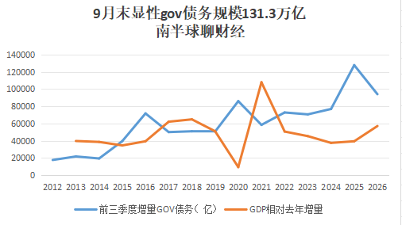
背景与关键数据
- 显性政府债务：账面上公开披露的政府债，主要是国债 + 地方政府债（一般债、专项债）。对应的是“隐性债务”（地方融资平台等不计入官方口径的债）。图的标题写着“9 月末显性 gov 债务规模 131.3 万亿”。（帖里把 government 写成 gov，应该是为了规避平台敏感词过滤。）
- 名义 GDP 增量：今年前三季度名义 GDP，比去年同期“多出来的那部分钱”（含价格因素）。
- “合计比值”：把多年的债务增量加总，除以同期的 GDP 增量加总，而不是把每年的比值求平均（避免 2020 年疫情时 GDP 增量接近 0 造成比值畸高）。
- 一个好用的小结论：当“债务增量 ÷ GDP 增量”大于“现有债务 ÷ GDP”时，宏观杠杆率（债务/GDP）就在上升。比值 >1 就是“借的钱比新增产出还多”。
- 另一个要提醒的口径问题：2024 年底启动的“化债”（把约 10 万亿隐性债务置换成显性债务）会让“显性债务增量”变大，但这部分更像“换标签”，并非全部是新增支出，所以 2022–2025 年的比值有一定“虚高”成分。这是我的补充，帖子没写。
图片解读
- 图：折线图，横轴 2012–2026 年，纵轴为“亿元”（0–14 万亿）。
- 蓝线 =「前三季度增量 GOV 债务（亿）」；橙线 =「GDP 相对去年增量」（名义 GDP 同比多出的金额），橙线从 2013 年开始。
- 目测读数：蓝线 2012 年约 1.8 万亿 → 2016 年约 7.2 万亿 → 2020 年约 8.6 万亿 → 2022–2024 年约 7.1–7.7 万亿 → 2025 年约 12.8 万亿（最高点） → 2026 年约 9.4 万亿。橙线大部分年份在 3.5–6.5 万亿之间，2020 年降到约 1 万亿，2021 年反弹到约 10.8 万亿，2024–2025 年约 3.8–4.0 万亿，2026 年回升到约 5.8 万亿。
- 信号：2025 年蓝线冲到高位而橙线在低位，两条线“张开大口”，就是 3.24 的来源；2026 年蓝线回落、橙线回升，两线靠拢，比值降到 1.65。
为什么重要 / 含义
这张图想说的是“增长的质量”：同样新增 1 元名义 GDP，现在要用比过去多一倍以上的政府债务去换。含义有三层：（1）财政空间在收窄，继续靠加杠杆刺激的边际效果在下降；（2）名义 GDP 增速偏低（价格偏弱）会让债务/GDP 上升更快；（3）这和后面帖 18 的“乡政府欠工程款还不起”、帖 12 的“实际利率偏高”是同一个故事的不同侧面。
延伸知识
债务动态的“雪球公式”：债务/GDP 的变化大致取决于“利率 r 与名义增速 g 之差”以及基本财政赤字。如果 g > r，债务能被经济增长“稀释”；如果 g < r，债务会像滚雪球一样越滚越大。中国近几年名义增速（受 GDP 平减指数偏弱影响）并不高，所以“r 与 g 的差距”成为关注点——这条逻辑在后面彭文生那篇（帖 9）谈美国时会再出现。
帖 3 · 美西 2026-10-20 12:47（北京 10-21 03:47）· #经济数据#
野村把中国 2026 年 GDP 预测上调到 4.7%，但坚持 2027 年只有 4.0%（低于市场共识的 4.4%）：数字在好转，但内需仍弱，市场可能不买账；明年最大的风险是出口“退潮”。读全文收起
帖子原文
野村： 我们把2026年中国GDP增速预测上调至4.7%，维持对2027年GDP预测4%不变，低于市场预期的4.4%，主要因为中国国内需求仍然十分疲弱。即使GDP总量增速在数字上有所改善，市场也可能对此反应平淡，因为这种改善未必能显著改变股票市场、政府债券收益率或居民消费需求。另外2027年最大的风险是出口增长回归常态 #经济数据#
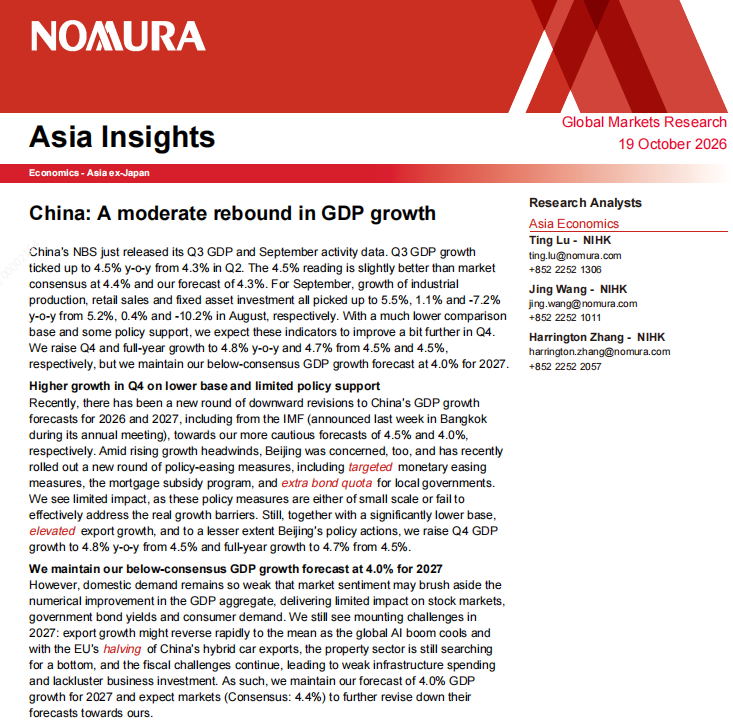
背景与关键数据
图片是野村 10 月 19 日《Asia Insights》研报首页，关键数字如下：
- 国家统计局刚公布的 Q3 GDP 同比 4.5%，高于 Q2 的 4.3%，也略高于市场共识（4.4%）和野村自己的预测（4.3%）。
- 9 月活动数据：工业增加值 +5.5%（8 月 5.2%）、社会消费品零售 +1.1%（8 月 0.4%）、固定资产投资 -7.2%（8 月 -10.2%）——三项都比 8 月改善，但消费和投资的绝对水平仍然很弱，投资还是负增长。
- 野村把 Q4 增速从 4.5% 上调到 4.8%、全年从 4.5% 上调到 4.7%，理由是：Q4 的基数低（去年同期比较基数下降），再加上新一轮政策宽松的有限支撑。
- 新一轮政策包括：定向货币宽松、购房补贴（按揭贴息）计划，以及给地方政府增加的债券额度。但野村认为这些措施要么规模小，要么无法真正解决实体经济的结构性障碍，所以“影响有限”。
- 对 2027 年 4.0% 的预测不变，列出的下行风险：AI 景气降温拖累出口回落到常态、欧盟对中国混动车出口“减半”的措施（呼应帖 14）、房地产仍在寻底、财政约束导致基建和企业投资疲弱。
图片解读
图 1：野村研报首页。标题“China: A moderate rebound in GDP growth”，正文三段分别是“Q3 回顾与数据”、“Q4 在低基数与有限政策支持下更高增长”、“我们对 2027 的 4.0% 预测维持不变”。文中还把“targeted monetary easing”“extra bond quota”“elevated export growth”“halving of China's hybrid car exports”等关键词标成斜体红字，能看出这些是作者的论证重点。
为什么重要 / 含义
核心信息是**“预期差”**：GDP 增速即使小幅上修，如果消费、投资的底层数据没有变，股市、国债收益率和居民消费未必会有反应；而市场对 2027 的 4.4% 共识偏乐观，野村的 4.0% 意味着未来一年有“下修预期”的风险。Jason 转这条，很可能是想强调“表面数据好转 ≠ 内需修复”，和帖 4、5、7、11、12 的一系列疲弱数据互相印证。
延伸知识
基数效应（Base Effect）：同比增速 = 今年 ÷ 去年 - 1。如果去年同期很低，今年哪怕“原地踏步”，同比也会显得好看；反过来基数高时同比会被压低。类比：去年考 50 分、今年考 60 分，进步 20%；去年考 90 分、今年考 95 分，只进步 5.6%——同样努力，数字却很不一样。看经济数据时，要同时看“环比”和“两年复合增速”，才不会被基数误导。
帖 4 · 美西 2026-10-20 12:52（北京 10-21 03:52）· #经济数据#
电商的两个增长引擎（总消费变大、线下往线上搬）同时熄火：9 月网上零售额几乎零增长，线上渗透率首次同比下降，平台只能在“存量”里互相抢人，抢来的是成本，不是增量。读全文收起
帖子原文
野村： 9月中国电商不但没有继续显著跑赢线下零售，而且线上零售渗透率出现了自2025年7月以来的首次同比下降。鉴于消费者情绪依然谨慎，中国电商行业的大多数企业已经收紧补贴支出，以保护自身现金流。过去很长一段时间，中国电商有两个增长来源：第一，居民消费总额不断增加。第二，原本在线下完成的消费不断转移到线上。现在，第一条路受到居民消费能力和意愿的约束；第二条路也开始出现放缓迹象。那么平台之间的竞争就会更加接近存量竞争。但当所有人都花钱抢同一批消费者时，最终增长的可能不是消费总量，而是竞争成本。#经济数据#
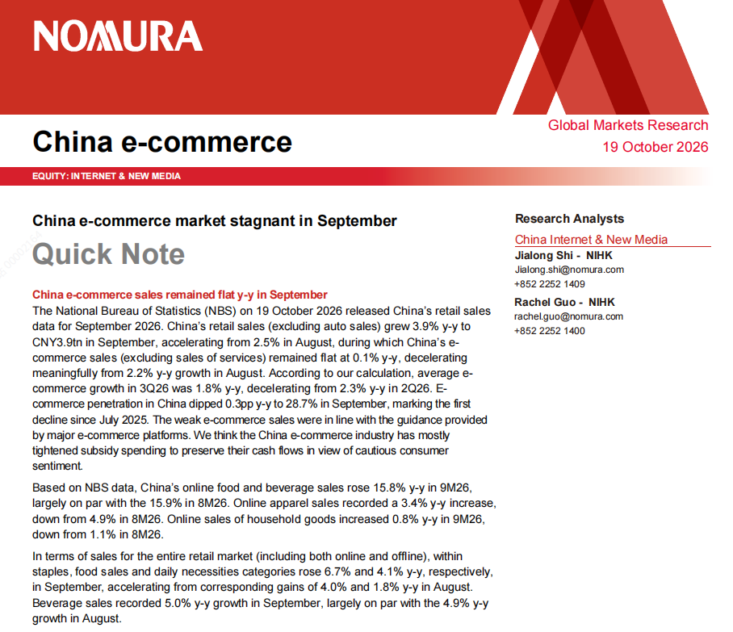
背景与关键数据
图片是野村 10 月 19 日《China e-commerce》快评。关键数据：
- 9 月社会消费品零售总额（不含汽车）同比 +3.9%，规模约 3.9 万亿元，比 8 月（+2.5%）加快。
- 但电商销售额（不含服务）同比只增 +0.1%，8 月还有 +2.2%；野村估算 3Q26 电商平均增速 1.8%，低于 2Q26 的 2.3%。
- 线上渗透率（网上零售占社零比重）同比下降 0.3 个百分点至 28.7%，是 2025 年 7 月以来首次下降。
- 分品类（1–9 月累计同比）：线上餐饮 +15.8%（与 1–8 月的 15.9% 基本持平）、线上服装 +3.4%（8 月 4.9%）、线上家居日用 +0.8%（8 月 1.1%）。
- 全渠道看，9 月粮油食品 +6.7%（8 月 4.0%）、日用品 +4.1%（8 月 1.8%）、饮料 +5.0%（8 月 4.9%）——必需消费在加速，可选消费（服装、家居）在降速。
- 野村的判断：平台已经“基本收紧补贴”，因为消费者情绪谨慎，企业要保住现金流。
图片解读
图 1：野村研报首页，标题“China e-commerce market stagnant in September”（9 月中国电商市场停滞）。正文三段依次是：整体零售与电商增速、线上渗透率数据、各品类表现。图里的小标题“China e-commerce sales remained flat y-y in September”就是帖子的核心结论。
为什么重要 / 含义
电商是过去十几年中国消费增长的“增量来源”之一。当线上渗透率不再提升，说明“从线下搬到线上”这条红利基本吃完；再叠加居民消费总量偏弱，意味着平台之间会更激烈地竞争、利润被压缩。对投资者来说，这影响电商平台的盈利预期（补贴减少短期利好利润，但同时 GMV 增速放缓）。对宏观来说，则是“内需偏弱”的又一个证据（和帖 3、帖 5 呼应）。
延伸知识
存量竞争与“内卷”：当行业的蛋糕不再变大，企业之间就像“囚徒困境”——谁都不敢先停止补贴，因为一停就丢份额；但大家一起补贴，利润就被平摊光了。这也是近年来中国一直在讲“反内卷”的背景之一。渗透率与 S 曲线：新渠道的渗透率通常呈 S 形——早期慢、中期猛、后期饱和，28–30% 的网上零售渗透率是否接近阶段性天花板，值得继续观察。
帖 5 · 美西 2026-10-20 12:56（北京 10-21 03:56）· #经济数据#
摩根士丹利的周度渠道数据显示，10 月 12–18 日中国新能源车订单普遍环比下滑，连比亚迪、零跑都首次明显下降，经销商说订单只有“正常水平的 70–80%”；但一周数据不足以下结论，要连续几周同比为负才算需求走弱。读全文收起
帖子原文
摩根斯坦利： 10月12日至18日，新能源汽车订单下降。国庆黄金周之后积压的购车需求逐渐得到释放，消费者重新回到观望状态，导致大多数主要新能源汽车品牌的订单量环比下降。即使是比亚迪和零跑，也出现了近期首次明确的环比下滑。经销商反馈，多数品牌的订单量只有正常稳定水平的70%—80%。这反映出消费者对新能源汽车日益增强的观望情绪。如今，购车者开始更加重视安全性，而不再只是关注车辆配置和技术参数。质量问题引发的担忧影响了订单转化率。如果只有一家企业下降，我们可以将其归因于产品竞争力下降、车型老化或品牌问题。但当多数企业同时下降，就必须考虑更广泛的市场因素，例如购车需求提前释放、补贴变化、消费者推迟决策以及行业订单周期波动。不过，不能仅凭一周的渠道订单估算，如果接下来几周订单持续同比负增长，才更能支持行业需求走弱的判断。#经济数据#
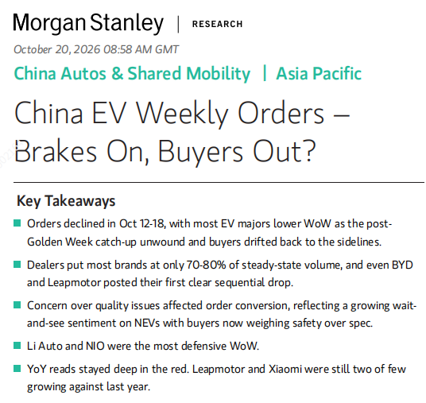
背景与关键数据
- 图片是摩根士丹利 10 月 20 日《China EV Weekly Orders – Brakes On, Buyers Out?》（刹车踩下，买家离场？）的要点摘要，原文翻译：国庆黄金周后积压需求释放完毕，买家回到观望；经销商给大多数品牌的订单只有稳定期水平的 70–80%；比亚迪、零跑出现近期首次明确环比下滑；对质量问题的担忧影响订单转化，购车者更看重安全而不是配置参数；理想和蔚来相对更“抗跌”；同比数据仍然深度为负，零跑和小米是少数仍实现同比增长的品牌。
- 概念：“渠道订单”是通过经销商调研、品牌周度数据估算的，不是官方销量，所以报告自己也强调不能凭一周数据下结论。
- “环比（WoW）”是与上一周比；“同比（YoY）”是与去年同期比，两者代表的信息不同：环比下降 + 同比深度为负，就说明不是简单的“假期效应”。
- 报告列出的几种“多数企业同时下滑”的解释：需求提前释放（pull-forward）、补贴变化、消费者推迟决策、订单周期波动。补充一点背景（我的补充）：2026–2027 年新能源车购置税从全免改为减半征收，这类政策“退坡”常会引发年底前的抢购和随后的需求回落。
图片解读
图 1：摩根士丹利报告首页“Key Takeaways”五个要点（见上）。重点看两处：一是“70–80% of steady-state volume”（订单只有稳定状态的七到八成）；二是“Orders declined in Oct 12-18, with most EV majors lower WoW as the post-Golden Week catch-up unwound”（国庆后补单潮结束）。
为什么重要 / 含义
新能源车是内需里“大件可选消费”的代表，也是 AI 之外中国制造业的另一张王牌。如果订单持续同比负增长，既说明居民不愿意花大钱，也会影响上游电池、零部件和整车厂的盈利，并对 2027 年出口/内需平衡产生影响（帖 3、帖 14 里的“欧盟减半混动车出口”也属同一条链）。Jason 把它和帖 3、4 放在一起，大概是想提醒“内需偏弱”不是单点而是面。
延伸知识
需求透支（Pull-forward）：补贴或政策到期前，消费者提前购买，之后一段时间需求就会“空档”。类比：商场周年庆大促后，一周内客流往往塌下来——不是商品变差了，而是需要被提前用掉了。判断是“透支”还是“真走弱”，要看后续 4–8 周的订单能否回到趋势线。同比 vs 环比的组合解读：环比跌 + 同比仍增 = 季节性或短期扰动；环比跌 + 同比也跌 = 需要警惕。
帖 6 · 美西 2026-10-20 13:04（北京 10-21 04:04）· #金融# · 带 PDF 附件
摩根大通解读 10 月 19 日金融街论坛：中国央行正把政策操作从“7 天”改成“隔夜”，以 DR001 为实际操作目标——这是“换尺子”的框架改革，不是自动降息；同时人民币国际化走“务实、以交易为导向”的路线。读全文收起
附件：《China's Monetary, RMB and Market Architecture Takes Shape_ Financial Street Forum 2026_ A progress report.pdf》（约 841 KB）。本次只读到帖子正文和附件首页预览图，没有下载 PDF 全文；正文已基本把报告要点复述了一遍。
帖子原文
JPM： 潘功胜行长10月19日的讲话，进一步明确了6月17日提出的货币政策框架将如何运行。央行更加清楚地区分了两个概念：央行希望引导的市场利率；央行用来引导市场利率的政策利率。央行表示，银行间隔夜质押式回购利率DR001，实际上已经成为货币政策的操作目标。央行正在考虑将主要公开市场操作期限由7天调整为隔夜。如果实施，隔夜公开市场操作利率将成为主要政策利率。这将使中国货币政策框架更接近隔夜利率走廊制度，为收益率曲线短端提供更清晰的定价锚，并减少不必要的利率波动。 将主要政策操作期限从7天缩短至隔夜，是货币政策框架的改变，而不是自动降息。因为7天期利率包含期限溢价。假设原来7天期政策利率是1.40%，而新的隔夜政策利率是1.30%。表面上，政策利率下降了10个基点。但如果隔夜市场利率原本就在1.30%附近，那么这不一定代表货币政策放松。真正的判断标准是：新的隔夜政策利率，是否低于此前的DR001水平，并进一步带动利率走廊、市场流动性以及未来短期利率预期下降。如果没有，那么改革主要是重新确定收益率曲线的锚点、改善政策传导，而非实质性宽松。 未来贷款定价可能出现分化。大型企业越来越可能使用与DR001挂钩的浮动利率贷款，而LPR仍然是中小企业和家庭贷款的重要参考利率。如果DR001逐步应用于贷款、债券和衍生品，将有助于加强不同金融市场之间的利率传导，也使利率风险更容易对冲。但这里存在一个风险：如果贷款利率越来越市场化，而存款利率没有同步提高灵活性，银行净息差可能受到挤压。 人民币国际化仍然采取务实、以交易为导向的方式。潘功胜10月19日估计，如果将人民币跨境支付系统CIPS以及银行内部结算计算在内，人民币约占国际支付的6%—7%，全球排名大约第三。这意味着人民币的国际使用程度高于SWIFT统计所显示的水平。但人民币的使用仍然主要集中在与中国有关的跨境交易之中。我们预计，人民币国际使用范围将扩大，但短期内不会取代美元的国际地位。#金融#
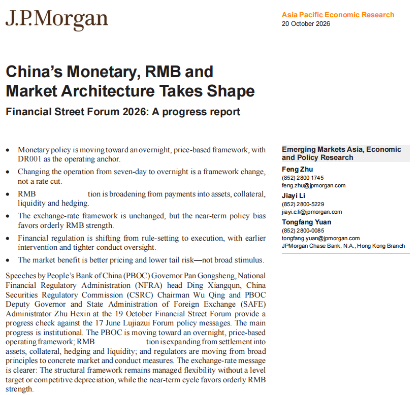
背景与关键数据
- DR001：存款类金融机构间“隔夜质押式回购”的加权平均利率，反映银行之间借一天钱的价格，是货币市场最短期、最灵敏的利率。
- 政策利率 vs 市场利率：央行并不能直接决定市场上的所有利率，而是通过“政策利率”（如公开市场操作利率）去引导“市场利率”（如 DR001）。帖里说央行现在把这两个概念“分得更清楚”。
- 7 天 → 隔夜：此前央行以 7 天逆回购利率为主要政策利率（市场习惯用 DR007 作为参考）。若改为隔夜操作利率，市场利率的“锚”就从 7 天移到隔夜，更接近美联储的联邦基金利率、日本央行的无担保隔夜拆借利率。
- 为什么不是自动降息（帖里的算例）：7 天利率包含“期限溢价”（借得越久，利率通常越高）。假设原来 7 天政策利率 1.40%，新的隔夜政策利率 1.30%，看起来降了 10 个基点，但如果隔夜市场利率本来就在 1.30% 附近，那只是“换了个口径”，并没有放松。真正的判断标准：新的隔夜政策利率是否低于此前的 DR001，并带动整条利率走廊和短期利率预期下降。
- 利率走廊：央行设一个上限（如常备借贷便利 SLF 利率）和一个下限（如超额准备金利率），隔夜政策利率在中间，市场利率被“夹”在走廊里，因此不容易大幅波动。
- 贷款定价分化：大企业可能用 DR001 挂钩的浮动利率贷款，中小企业和居民仍然主要参考 LPR（贷款市场报价利率）。风险是贷款利率越来越市场化，而存款利率调整不灵活，银行净息差（贷款利率减存款成本）会被进一步挤压——中国银行业净息差在 2025 年就已处在约 1.4% 的历史低位（我的补充）。
- 人民币国际化：央行行长估算，把 CIPS（人民币跨境支付系统）和银行内部结算算上，人民币占国际支付约 6–7%，排名全球第三；而 SWIFT 口径下占比低得多（通常只有 3–4%）。摩根大通预计人民币使用范围会扩大，但短期内不会取代美元。
图片解读
图 1：摩根大通亚太经济研究 10 月 20 日报告首页，标题“China's Monetary, RMB and Market Architecture Takes Shape”（中国的货币、人民币与市场架构正在成形），副标题“Financial Street Forum 2026: A progress report”。要点共六条：
- 货币政策正在向“以隔夜价格为基础”的框架转变，DR001 是操作锚；
- 从 7 天改为隔夜是框架改变，不是降息；
- 人民币国际化正从“支付”扩展到“资产、抵押品、流动性和对冲”；
- 汇率框架没有变，但近期政策倾向于“有序的人民币走强”；
- 金融监管从“制定规则”转向“执行”，更早介入、更严格的行为监管；
- 市场得到的好处是“更好的定价和更低的尾部风险”，而不是大水漫灌式刺激。 文中列出的发言嘉宾包括人民银行行长潘功胜、金融监管总局局长丁向群、证监会主席吴清、央行副行长兼外汇局局长朱鹤新，并把 10 月 19 日金融街论坛当作对 6 月 17 日陆家嘴论坛政策信号的“进度检查”。
为什么重要 / 含义
对市场来说，这是“政策传导机制”的升级：短端利率更稳、更可预测，期限结构（收益率曲线）更清晰，债券、贷款、衍生品的定价都会更统一。对投资者的实际含义是：不要把“7 天改隔夜”解读成降息利好，要盯接下来隔夜政策利率定在哪儿、和 DR001 的相对位置。人民币方面，“有序走强”倾向对出口企业不一定是好消息，但对人民币资产的国际吸引力是加分项。Jason 把这条放在一连串“内需偏弱”的数据后面，可能是想表达：政策层在做的是“修管道”，而不是“放大水”。
延伸知识
价格型 vs 数量型调控：过去中国央行同时盯着货币供应量（M2、社融）等“数量”指标和利率“价格”，现在在朝“盯利率”转，类似美联储盯联邦基金利率。类比：以前是“控制水龙头开多大（数量）”，现在改成“直接设定水价（价格）”。期限溢价：同样是借钱，借 7 天比借 1 天风险更大、要求的回报更高；所以不同期限的利率不能直接比大小，必须先“同口径”。
帖 7 · 美西 2026-10-20 13:11（北京 10-21 04:11）· #经济数据#
长江证券：9 月中国 PPI（工厂出厂价）同比 +5.0%、CPI（消费者价格）只有 +0.9%，两者差距扩大到 4.1 个百分点；这轮 PPI 上涨主要是国际大宗商品涨价“输入”进来的（外生），消费端需求撑不住，所以剪刀差年内很难收窄。读全文收起
帖子原文
长江： 截至2026年9月，PPI-CPI剪刀差走阔至4.1pct，PPI转正与CPI低位并存，上下游价格未形成共振。 2006年以来，历轮PPI上行均由上游板块率先启动，差异在于涨价能否向下传导，而传导是否发生取决于终端需求能否对提价形成承接。**以PPI上行的驱动因素为划分依据，我们将由国内政策刺激、内需扩张或供给收缩主导的PPI上行归为“内生”属性，将由输入性涨价以及脉冲式的出口替代效应主导的PPI上行归为“外生”属性。**具体而言，前者本质上是国内宏观调控与经济周期的产物，主动权在国内，具有相对可控性与持续性；而后者的需求源头与定价权均在海外，国内仅是被动承接，因而难以控制，且容易随外部条件变化而迅速退潮。 本轮剪刀差出现在地缘冲突升级、国际大宗商品大幅上行的背景下。此外，当前新旧动能切换尚未完成，总需求缺口仍存在，上游涨价缺乏足够的需求承接。整体来看，本轮PPI上升期呈现出“外生”的驱动特征。因此，我们推测本轮剪刀差的收敛需要等待输入性冲击消退，主要依靠PPI回落完成。我们判断，在地缘扰动延续的背景下，输入性涨价短期内仍将存在，PPI回落概率较低，剪刀差年内难以显著收敛。#经济数据#
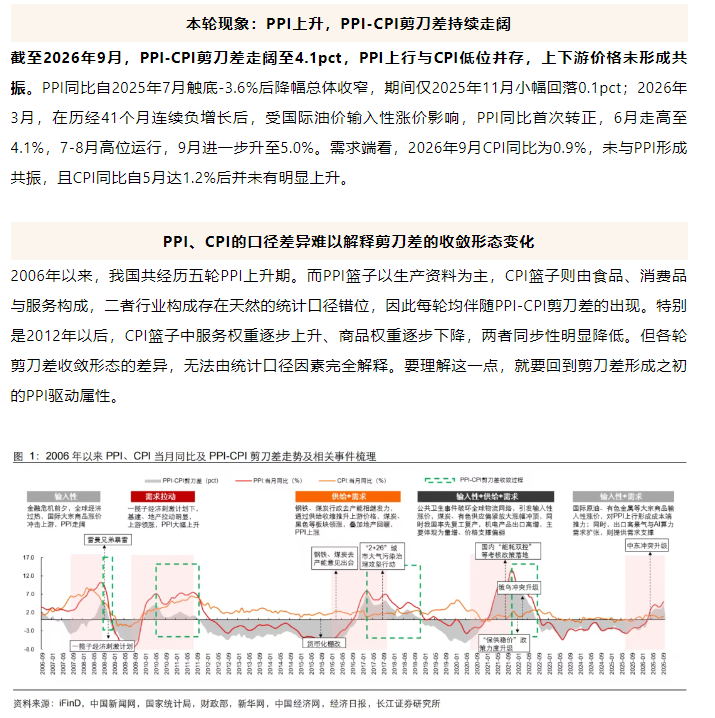
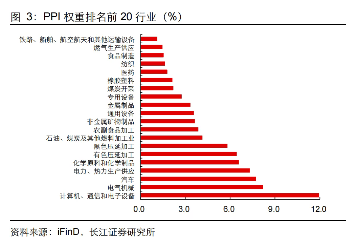
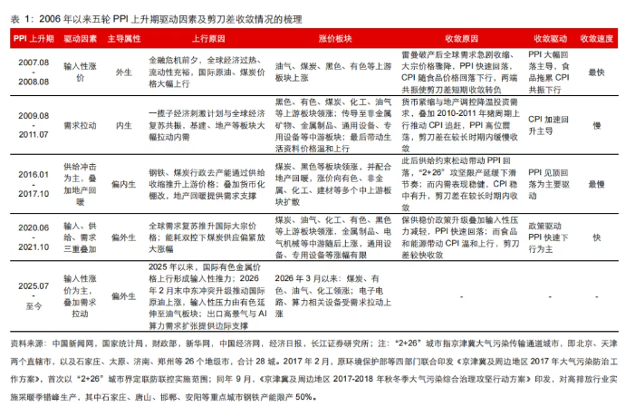
背景与关键数据
- PPI（生产者价格指数）：工厂出门的价格，偏上游、偏原材料和中间品；CPI（消费者价格指数）：老百姓买东西的价格，偏食品、服务、日用品。PPI-CPI 剪刀差：两者之差。差越大，说明“上游涨价没传到下游”，中下游企业成本升高、却涨不动价，利润被挤压。
- 图 1 里的数据线索：PPI 同比 2025 年 7 月触底 -3.6%；2026 年 3 月在连续 41 个月负增长后首次转正；6 月 4.1%；7–8 月高位运行；9 月升到 5.0%；而 9 月 CPI 只有 0.9%（5 月高点 1.2% 之后没有明显回升）。5.0% - 0.9% = 4.1 个百分点，与帖子一致。
- 2006 年以来中国共经历 五轮 PPI 上行，每次剪刀差收敛的方式不一样。长江的分类方法：内生（国内刺激、内需扩张、供给收缩主导，主动权在国内，可控且持续）vs 外生（输入性涨价或出口替代的脉冲，需求和定价权都在海外，容易迅速退潮）。
- 判断：本轮处于地缘冲突升级、国际大宗商品大幅上涨的背景下，叠加国内“新旧动能切换”未完成、总需求缺口仍在，所以上游涨价缺乏需求承接 → 属于“外生”。收敛只能靠“外部冲击消退→PPI 回落”，而不是 CPI 被拉上来。
- 为什么口径差异解释不了问题：PPI 以生产资料为主，CPI 以食品、消费品、服务为主，本来就“天然错位”；2012 年以后 CPI 中服务占比越来越高、商品占比下降，两者同步性变低；但各轮收敛方式不同，不能只用统计口径解释。
图片解读
- 图 1（长文截图 + 图 1“2006 年以来 PPI、CPI 当月同比及 PPI-CPI 剪刀差走势及相关事件梳理”）：红线是 PPI 同比、橙线是 CPI 同比、灰色面积是剪刀差，横轴 2006–2026。图上用色块标出五段 PPI 上行期及其驱动：输入性（2007–08）、需求拉动（2009–11）、供给 + 需求（2016–17）、输入 + 供给 + 需求（2020–21）、输入性 + 需求（2025–至今，最右侧）。可以看到：每一次上行都伴随灰色面积（剪刀差）抬升，之后又回落。
- 图 2：PPI 权重排名前 20 行业（%）：横条图。最高是“计算机、通信和电子设备”（约 12%），其次是电气机械（约 8%）、汽车（约 7.7%）、电力热力（约 7.3%）、化学原料（约 6.6%）、有色压延（约 6.4%）、黑色压延（约 5.8%）；最低的是铁路船舶航空航天设备（约 1%）。意思是：PPI 里最大的权重是电子和设备制造，而不是大宗商品。大宗商品（煤、油、有色）涨价会推高 PPI，但只占其中一部分；如果终端需求不强，涨价就传不下去。（图里没有解释，但这是它放在这里的用途，属我的推断。）
- 图 3：表 1，2006 年以来五轮 PPI 上升期的驱动因素及剪刀差收敛情况：表格列出每轮的“驱动因素、主导属性（内生/外生）、上行原因、涨价板块、收敛原因、收敛驱动、收敛速度”。可读出的概要（表格字较小，部分细节我只读出大意）：
- 2007.08–2008.08：输入性涨价，外生；雷曼破产后大宗价格暴跌，PPI 快速回落，收敛速度最快。
- 2009.08–2011.07：需求拉动（一揽子刺激计划），内生；后来货币收紧和地产调控降温，主要靠 CPI 加速上行收敛，速度偏慢。
- 2016.01–2017.10：供给冲击为主，叠加地产回暖，偏内生；主要靠 PPI 见顶回落收敛，速度最慢。
- 2020.06–2021.10：输入、供给、需求三重叠加，偏外生；收敛较快，由政策驱动。
- 2025.07–至今：输入性涨价为主，叠加需求拉动，偏外生——正是现在这一轮（最后一行是“至今”，尚未收敛）。表中写到 2026 年 2 月中东冲突升级、国际原油上涨，价格由有色延伸到油气，出口高景气与 AI 算力需求扩张提供边际支撑。
为什么重要 / 含义
PPI 转正通常被看作“通缩结束”的信号，但这篇研报提醒：PPI 转正不等于经济变好。如果是输入性涨价，对上游资源品企业有利，对下游加工和消费行业是“成本冲击”，对居民则几乎没有受益（CPI 只有 0.9%）。对资产价格的含义：上游资源股受益但持续性存疑；中下游制造业利润承压；央行不会因为 PPI 上涨而收紧，因为 CPI 低、需求弱。Jason 把它和帖 3、4、5 并排，更像是在强调“数据分化 = 经济内部不平衡”。
延伸知识
成本推动型通胀 vs 需求拉动型通胀：需求拉动是“钱多货少”，物价上涨伴随经济繁荣；成本推动是“原材料涨价”，物价上涨伴随利润下降、增长放缓，典型例子是 1970 年代的石油危机“滞胀”。区分这两类通胀，是央行决定是否加息/降息的关键。剪刀差的本质是利润在产业链上的重新分配：上游挣的钱，其实是中下游企业和最终消费者让出来的。
帖 8 · 美西 2026-10-20 13:17（北京 10-21 04:17）· #TAX#
2026 年 11 月 1 日起，全国统一的税务处罚裁量基准把“企业不缴/少缴社保”明确分档：逾期仍不缴的，处以欠缴额 1–3 倍罚款；这是社保欠缴首次纳入全国统一的税务处罚标准。图中南方周末进一步分析“谁会被明显影响”。读全文收起
帖子原文
南方周末： 2026年11月1日起，《全国税务行政处罚裁量基准（2026年版）》（下称《基准》）将正式实施。《基准》第30项规定，用人单位在规定期限内不缴或者少缴社会保险费的，经税务机关责令限期缴纳。逾期仍未缴纳的，被划分为一般、较重、严重三档，处以欠缴数额一倍以上、三倍以下的罚款。这是社保欠缴行为首次被纳入全国统一的税务行政处罚裁量体系。 谁会受到明显影响？ #TAX#
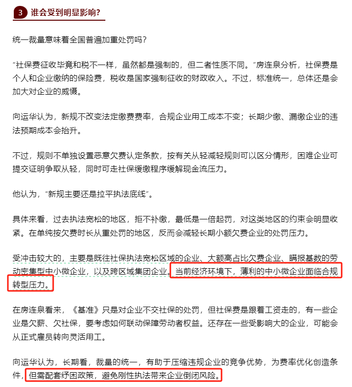
背景与关键数据
- 裁量基准：行政处罚法规通常只写“处 X 元以上 Y 元以下罚款”，这个区间很宽，执法者有很大的自由裁量空间；“裁量基准”则把区间细分成“轻、中、重”几档，规定什么情形罚多少，用来统一尺度、减少各地执法不一致。
- 帖子所述：第 30 项——先“责令限期缴纳”，逾期仍不缴，分一般 / 较重 / 严重三档，罚欠缴额 1 倍以上 3 倍以下。
- 社保现在是税务部门统一征收（2019 年起社保费由税务部门征收），所以税务系统出裁量基准是顺理成章的。（背景补充）
- 图片（南方周末第 3 部分“谁会受到明显影响？”）里两位专家的观点：
- 房连泉：社保费和税并不一样（个人和企业缴纳的保险费 vs 国家强制征收的财政收入），但标准统一后总体会加大对企业的威慑。
- 向运华：新规不改变法定缴费费率，合规企业用工成本不变；长期少缴、漏缴的企业违法预期成本提高。规则也没有单独设置“恶意欠费”认定条款，可以按从轻减轻规则区分情形；困难企业可提交证明争取从轻，也可走“社保缓缴”程序缓解现金流压力。“新规主要还是拉平执法底线。”
- 受冲击较大的：既往社保执法宽松区域的企业、大额高占比欠缴企业、瞒报基数的劳动密集型中小微企业，以及跨区域集团企业。
- 红框标出的重点：“当前经济环境下，薄利的中小微企业面临合规转型压力”；以及“长期看，裁量的统一有助于压缩违规企业的竞争优势，为费率优化创造条件，但需配套纾困政策，避免刚性执法带来企业倒闭风险”。
- 房连泉还提到：社保跟着工资走，有些企业是欠薪、欠社保，要考虑如何联动保障劳动者权益；也可能有受影响企业从正式雇员转向灵活用工。
图片解读
图 1：南方周末文章截图，红框标出两处结论（见上）。核心就是“拉平执法底线”：过去执法宽松的地方（可以不补缴、或只按欠费时长轻罚），今后会明显收紧；而过去重罚的地方，对长期小额欠费企业反而会放宽。
为什么重要 / 含义
对企业：用工成本里隐藏的“合规成本”会被重新定价，对利润薄、以前靠少缴社保压成本的中小企业冲击最大，可能出现“转灵活用工/外包”或“裁员/关停”的反应。对劳动者：理论上社保覆盖面提高，但短期企业可能压低工资或减少招聘来消化成本。对宏观：在内需偏弱、中小企业承压的背景下，这是“合规收紧”与“稳增长”之间的权衡；南方周末强调要“配套纾困政策”。同时，社保费收入增加也有助于养老金体系长期的可持续性（养老金缺口是中国财政的长期压力之一）。
延伸知识
非正规成本与“灰色用工”：很多低利润行业长期处于“少缴社保、现金发工资”的灰色状态，这相当于“劳动者和政府共同补贴企业”。统一执法标准会把这笔隐性补贴收回，企业要么提价、要么压缩规模，这就是“合规转型压力”的来源。类比：路上以前没人管占道经营，突然严管，摊贩要么去正规市场交租金，要么只能收摊。
帖 9 · 美西 2026-10-20 13:30（北京 10-21 04:30）· #金融#
这是一篇长文（正文全在 9 张截图里）。彭文生（据我所知长期是中金公司首席经济学家）的核心论点：美债 10 年期收益率重新破 5%，不是单纯“市场情绪”，而是“AI 投资浪潮抬高自然利率”和“国债供给增加终结安全资产荒”两条逻辑叠加；与此同时，全球资产配置正从“美元安全资产（美债）”转向“美元风险资产（美股）”，这对美元的国际货币地位意味着新的挑战和脆弱性。读全文收起
帖子原文
彭文生： 从AI经济与安全资产看美债利率与国际货币变局 #金融#
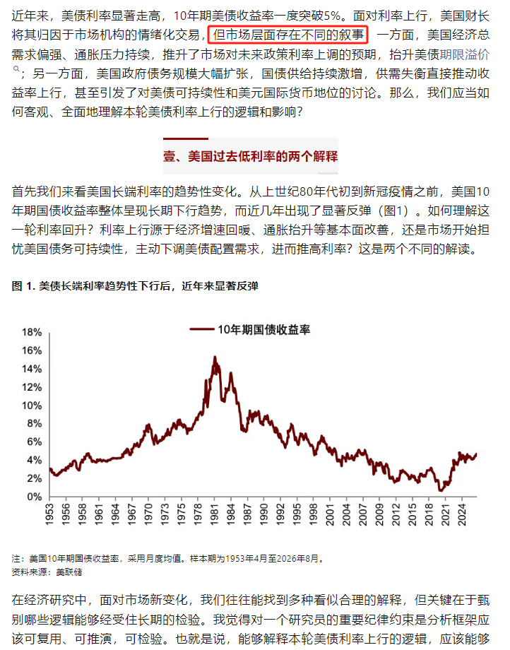
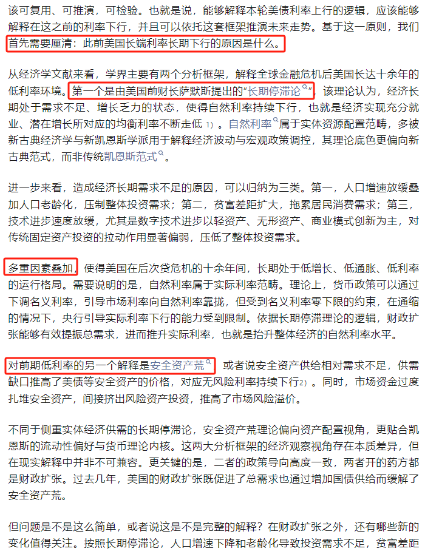
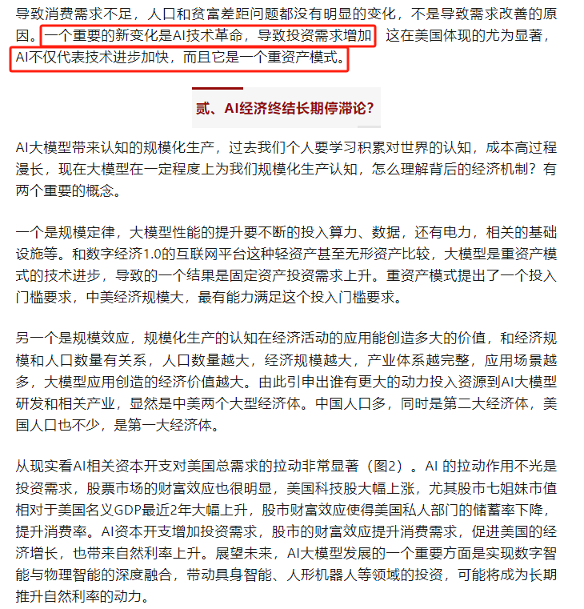
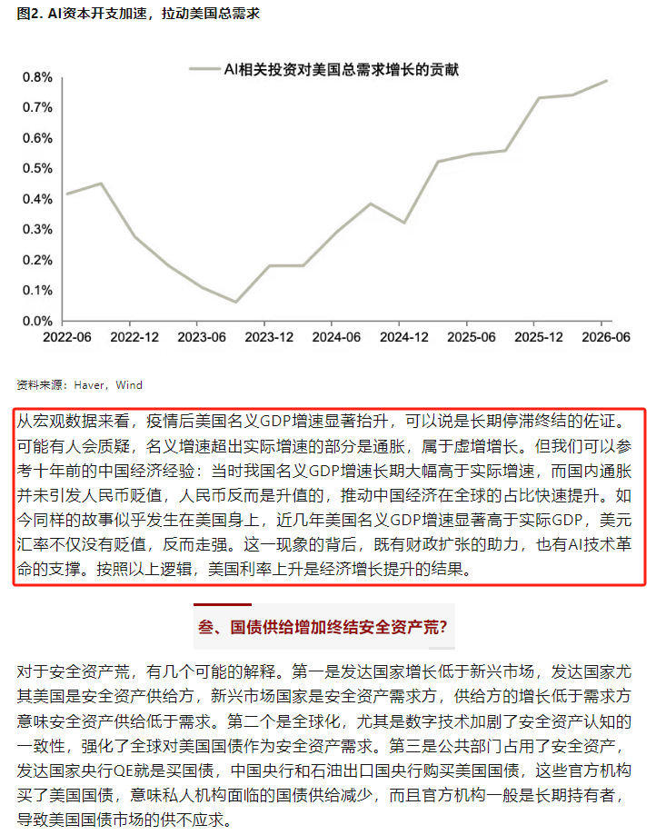
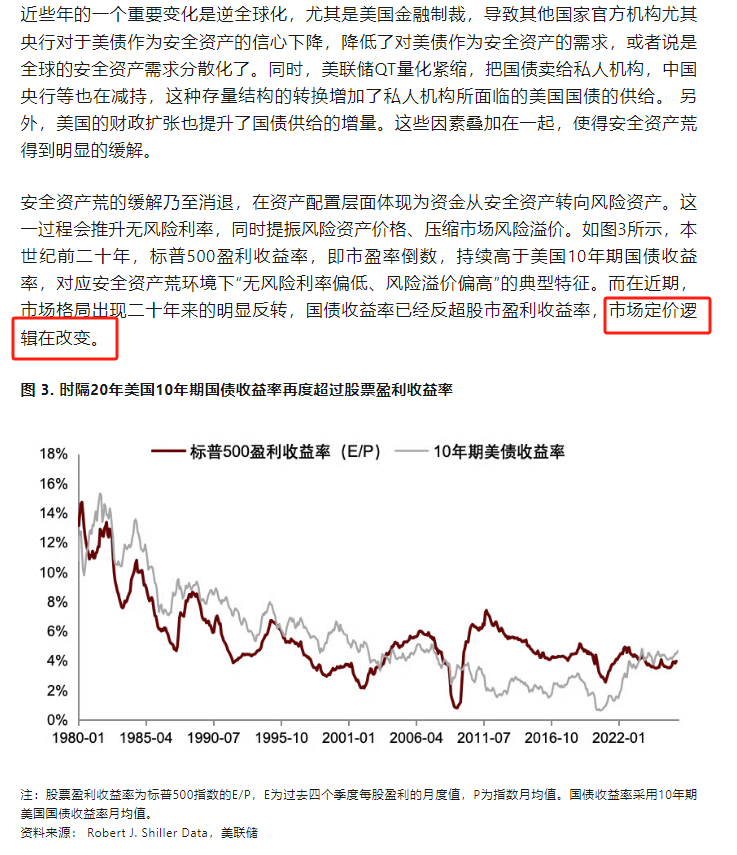
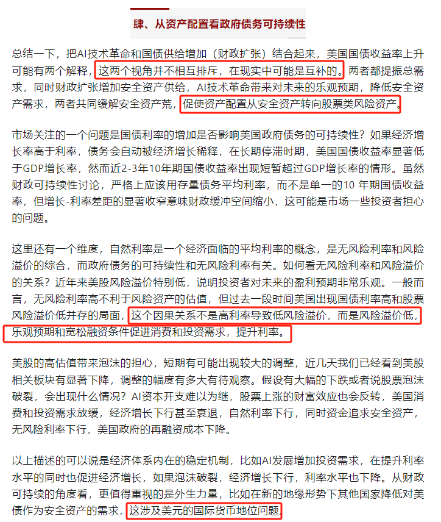
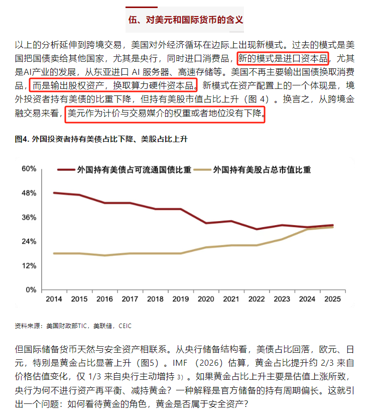
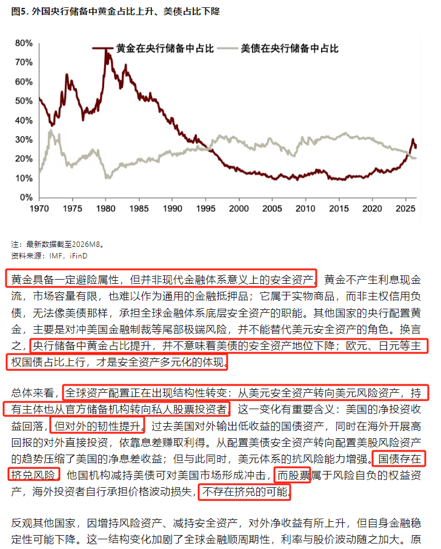
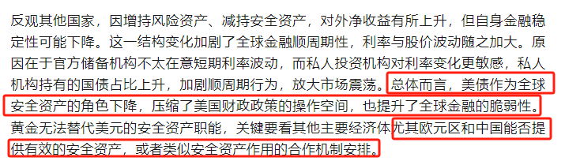
背景与关键数据（按文章结构梳理）
壹、美国过去低利率的两个解释
- 从 1980 年代初到新冠前，美国 10 年期国债收益率长期下行；最近几年显著反弹（图 1）。问题是：这是经济变好（基本面）还是市场担心债务可持续、主动少买美债？
- 解释一：长期停滞论（萨默斯提出）：经济长期需求不足、增长乏力，使“自然利率”（让经济刚好充分就业的均衡利率）不断降低。造成需求不足的三类原因：人口增速放缓 + 老龄化压低投资需求；贫富差距拖累消费；技术进步轻资产化（数字技术、无形资产对传统固定资产投资的拉动弱）。按这个理论，财政扩张可以有效提振总需求，抬升自然利率。
- 解释二：安全资产荒：安全资产（美债等）供给相对需求不足 → 价格被推高、收益率被压低；同时资金过度扎堆安全资产，挤出风险资产投资，推高风险溢价。
- 两者都指向“需要财政扩张”，药方一致。
贰、AI 经济终结长期停滞论？
- AI 大模型是重资产模式（算力、数据、电力）：和互联网平台的轻资产不同，它推高固定资产投资需求，并且有很高的投入门槛 → 中美两个大经济体最有能力满足。
- 规模定律（模型越大性能越强，需要持续堆算力）+ 规模效应（经济规模越大，应用创造的价值越大）。
- 现实：AI 相关投资对美国总需求增长的贡献明显上升（图 2）；股票市场财富效应（科技七巨头市值相对名义 GDP 近两年大幅上升）降低了居民储蓄率、提振消费 → 共同推高自然利率。未来如果 AI 与具身智能、人形机器人融合，会继续推升投资需求。
- 文章还有个类比：十年前中国名义 GDP 增速长期高于实际增速，国内通胀没有引发人民币贬值，反而人民币升值；如今美国也是“名义增速显著高于实际 GDP、美元反而走强”，背后既有财政扩张，也有 AI 技术革命。按这个逻辑，“美国利率上升是经济增长提升的结果”。
叁、国债供给增加终结安全资产荒？
- 安全资产荒的三个解释：发达国家增长低于新兴市场 → 供给方增长低于需求方；全球化与数字技术增强了全球对美债作为安全资产的共识；公共部门（央行 QE、中国央行和石油出口国央行）买走大量国债 → 私人机构可得国债减少。
- 近年的变化：逆全球化和美国金融制裁让他国官方机构对美债的信心下降、需求分散；美联储 QT（缩表）把国债抛给私人机构；美国财政扩张增加供给 → 安全资产荒得到明显缓解甚至消退。资金从安全资产转向风险资产：无风险利率抬升，风险资产价格上涨，风险溢价压缩。
- 图 3：标普 500 盈利收益率（E/P）长期高于 10 年期美债收益率（“无风险利率偏低、风险溢价偏高”的典型特征）；而近期，国债收益率已经反超股市盈利收益率，二十年来首次。红框结论：“市场定价逻辑在改变”。
肆、从资产配置看政府债务可持续性
- AI 革命和国债供给增加这两个视角“并不相互排斥，可能是互补的”：都提振总需求，同时都缓解安全资产荒，促使资产配置从安全资产转向股票等风险资产。
- 债务可持续性：长期停滞时期美债收益率显著低于 GDP 增长率，债务会被增长“稀释”；但近两三年 10 年期收益率偶尔超过 GDP 增速，“增长-利率差距”收窄，财政缓冲空间缩小，这是一些投资者担心的。
- 一个关键判断（红框）：“不是高利率导致低风险溢价，而是风险溢价低（乐观预期和宽松融资条件）促进消费和投资需求，提升利率”。
- 若 AI 泡沫破裂：财富效应反转，消费和投资放缓，自然利率下降，资金追求安全资产，无风险利率下行，美国政府再融资成本下降——这是体系内在的稳定机制。更需要关注的是外生力量：新的地缘形势下其他国家降低对美债作为安全资产的需求，这涉及美元的国际货币地位。
伍、对美元和国际货币的含义
- 过去模式：美国卖国债给他国央行、进口消费品。新模式：进口资本品（尤其 AI——从东亚进口 AI 服务器、高速存储器），输出股权资产换取算力硬件。
- 图 4：外国持有美债占可流通国债比重从 2014 年的约 48% 降到 2025 年的约 32%；外国持有美股占美股总市值比重则从约 18% 升到约 31%，两条线在 2024–2025 年交汇。
- 从跨境金融交易看，“美元作为计价与交易媒介的权重或者地位没有下降”。
- 图 5：外国央行储备中黄金占比大幅上升、美债占比下降。IMF（2026）估算：黄金占比提升约 2/3 来自价格估值变化，只有 1/3 是央行主动增持。作者的判断：黄金有避险属性，但不是现代金融体系意义上的安全资产（不产生利息现金流、市场容量有限、难做抵押品、不是主权信用负债）；央行储备中黄金占比升高并不意味着美债安全资产地位下降；欧元、日元等主权国债占比上行，才是安全资产多元化的体现。
- 总体看：全球资产配置在发生结构性转变——从美元安全资产转向美元风险资产，持有主体从官方储备机构转向私人股票投资者。含义：美国的净投资收益回落，但对外韧性提升（不再依赖“铸币税”式的低成本融资）；国债存在“挤兑”风险，而股票属于风险自负的权益资产，不存在挤兑的可能。反观其他国家：增持风险资产、减持安全资产，对外净收益有所上升，但自身金融稳定性可能下降，全球金融顺周期性增强（利率与股价波动随之放大）。
- 最终结论（红框）：“总体而言，美债作为全球安全资产的角色下降，压缩了美国财政政策的操作空间，也提升了全球金融的脆弱性。黄金无法替代美元的安全资产职能，关键要看其他主要经济体尤其欧元区和中国能否提供有效的安全资产，或者类似安全资产作用的合作机制安排。”
图片解读
- 图 1 · 10 年期国债收益率（1953–2026-08，月度均值，美联储数据）：深红线。1981 年峰值约 15.3%，之后 40 年趋势性下行，2020 年疫情期低至约 0.7%，近两年回升到约 4–5%。图的意义：先建立“长期下行 vs 近期反弹”的大背景。
- 图 2 · AI 资本开支加速，拉动美国总需求：折线（2022-06 至 2026-06，季度）。AI 相关投资对美国总需求增长的“贡献度”目测从 2022 年约 0.4% 一路降到 2023 年 9 月约 0.06%（低点），之后回升，到 2026 年 6 月约 0.8%（新高）。意思是 AI 投资对 GDP 增速的贡献已经比两年前高出一大截。
- 图 3 · 时隔 20 年美国 10 年期国债收益率再度超过股票盈利收益率：深红线是标普 500 盈利收益率（E/P），灰线是 10 年期美债收益率，1980–2026。长期红线高于灰线（股票“更便宜”所以要风险补偿），而最右端灰线略高于红线（约 4.7% vs 约 4.0%）——“债比股收益更高”的格局重现。
- 图 4 · 外国投资者持有美债占比下降、美股占比上升：红线（美债占可流通国债比重）从约 48%（2014）降至约 32%（2025）；浅棕线（美股占总市值比重）从约 18% 升至约 31%。两线在 2024–2025 年交汇。
- 图 5 · 外国央行储备中黄金占比上升、美债占比下降：黄金占比（深红）1980 年曾飙到约 75–80%，之后长期下滑到约 10%（2015 年前后），近两年快速回升至约 25–30%；美债占比（浅灰）近年降到约 20%。数据截至 2026 年 8 月。
- 截图与文中图表的对应关系：上面的“图 1–5”指文章里的图表编号，分别出现在第 1、4、5、7、8 张截图里；第 2、3、6、9 张截图是纯正文，红框处就是上面“背景与关键数据”里引用的关键论断（长期停滞论、AI 重资产模式、市场定价逻辑改变、美元风险资产化、安全资产角色下降等）。
为什么重要 / 含义
文章的潜台词是“理解美债 5% 的方式不要只有一种”：它不一定是美国要出问题的信号，也可能是美国经济强（AI 投资 + 股市财富效应）的结果。但同时，它也指出了隐忧：资产配置从“官方储备买美债”转向“私人买美股”，美元体系更依赖风险偏好——一旦 AI 泡沫破裂，海外资金撤出美股的冲击，可能比官方少买几笔美债更大。对中国读者的含义：其他主要经济体（包括中国）能不能提供“安全资产”，是未来国际货币格局的变量；这也解释了为什么帖 6 里央行如此强调人民币资产的“抵押品、流动性、对冲”功能。Jason 单发标题 + 全文截图，是在推荐这篇“把 AI、利率、美元串起来”的框架性文章。
延伸知识
- 自然利率（r）*：看不见摸不着、让经济既不过热也不过冷的“中性利率”，只能靠模型估算。AI 如果真能持续提高投资需求，r* 就会上升，意味着“高利率可能是新常态”。
- 盈利收益率 vs 国债收益率（“股债性价比”）：盈利收益率 E/P 是市盈率的倒数，可以理解成“买股票每年大致能赚的钱 ÷ 价格”；和国债收益率相比，就是一个“股票比债券值不值”的粗略指标。当债比股更赚（国债收益率 > E/P），股票需要靠“未来盈利增长”来证明自己。
- 特里芬难题 / “过度特权”：美元作为全球储备货币，需要不断向世界输出美元和美债，但这会让美国累积外债、削弱自身信用。文章里的“新模式”（输出股权换算力硬件），某种程度上是这个难题的一种新解法。
帖 10 · 美西 2026-10-20 13:36（北京 10-21 04:36）· #经济数据#
东吴证券的宏观深度报告算了一笔账：在美国，高强度使用 AI 的公司每位员工分摊的 AI 开支已接近一个人的用工成本；而在中国，AI 的“价格优势”还不如“劳动力更便宜的优势”大，所以短期内 AI 对就业的替代冲击，在中国会比美国更弱。读全文收起
帖子原文
东吴： AI取代劳动力？劳动力更便宜啊 #经济数据#
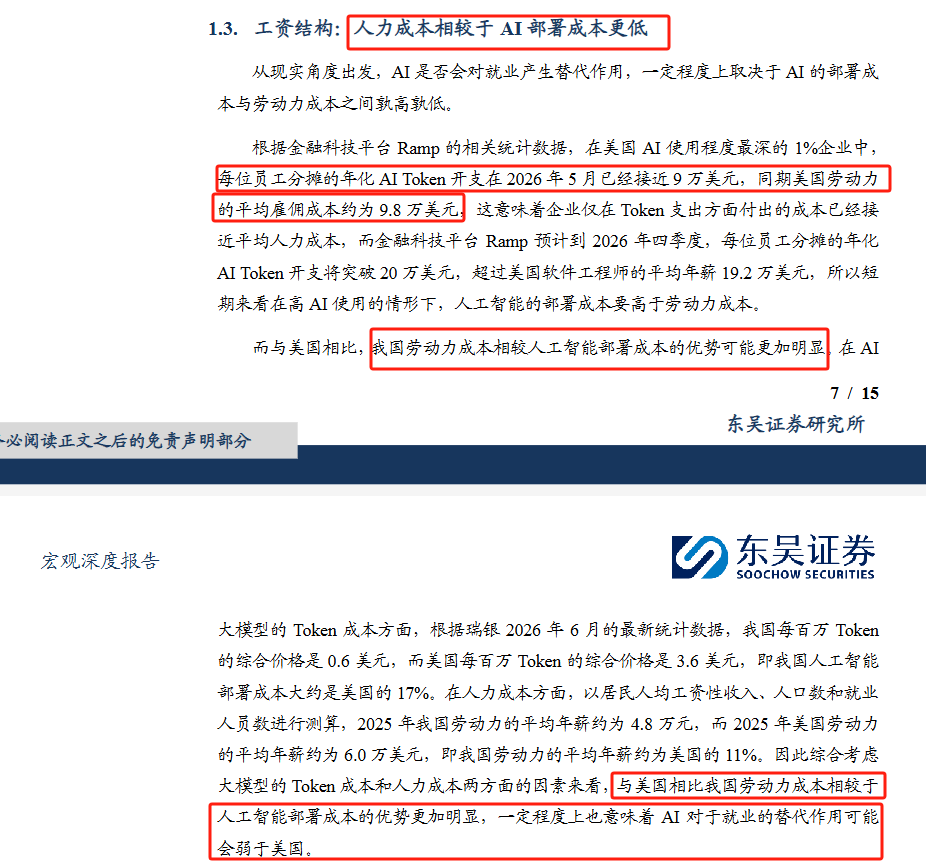
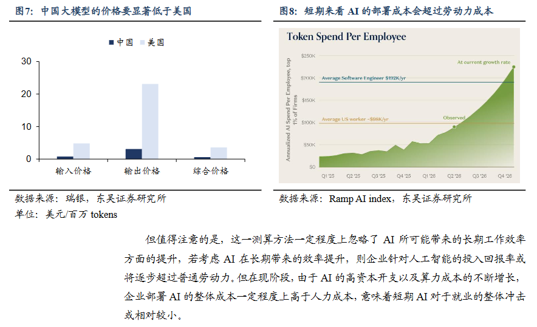
背景与关键数据
- Token（词元）：大模型的计费单位，约等于“一个词或字的片段”。企业用 AI，按 token 向模型厂商付费，所谓 “Token 开支”就是企业的 AI 使用账单。
- 美国数据（Ramp 平台）：在美国 AI 使用程度最深的 1% 企业里，每位员工分摊的年化 AI Token 开支在 2026 年 5 月已接近 9 万美元，而同期美国劳动力的平均雇佣成本约 9.8 万美元——AI 开支几乎追上了一个人的成本。Ramp 预测到 2026 年 Q4，这个数会突破 20 万美元，超过美国软件工程师的平均年薪 19.2 万美元。所以东吴的结论是：短期内，高 AI 使用强度下，部署 AI 的成本要高于劳动力成本。
- 中国对比（按瑞银 2026 年 6 月数据）：中国每百万 Token 综合价格约 0.6 美元，美国约 3.6 美元——中国 AI 部署成本约是美国的 17%。人力成本方面，2025 年中国劳动力平均年薪约 4.8 万元（人民币），美国约 6.0 万美元，中国人力成本约是美国的 11%。
- 所以相对来看：中国的 AI 比美国便宜 83%，但中国的劳动力比美国便宜得更多（便宜 89%），劳动力相对 AI 的成本优势在中国更明显（17% ÷ 11% ≈ 1.5 倍）。
- 报告也给了一个重要“但是”：这个测算忽略了 AI 长期可能带来的效率提升；如果考虑长期效率，AI 的投入回报率可能逐步超过普通劳动力。但在现阶段，由于 AI 的高资本开支和算力成本不断增长，企业部署 AI 的整体成本一定程度上高于人力成本，意味着短期 AI 对就业的整体冲击或相对较小。
- 一个提醒（我的补充）：Ramp 的数据来自“AI 使用最深的 1% 企业”，是高度挑选过的样本，不能代表全体企业的平均水平。
图片解读
- 图 1（报告截图）：“1.3 工资结构：人力成本相较于 AI 部署成本更低”。红框强调了三处：美国高 AI 使用企业的人均 Token 开支数据（见上）、“我国劳动力成本相较人工智能部署成本的优势可能更加明显”、以及最后的结论“AI 对于就业的替代作用可能会弱于美国”。
- 图 2 左（图 7：中国大模型的价格要显著低于美国）：柱状图，单位美元/百万 tokens，深蓝=中国、浅蓝=美国。输入价格：中国约 0.8、美国约 4.8；输出价格：中国约 3.1、美国约 23；综合价格：中国约 0.6、美国约 3.6。可以看到“输出价格”差距最大（约 7 倍）。
- 图 2 右（图 8：短期来看 AI 的部署成本会超过劳动力成本）：Ramp AI Index，绿色面积曲线=“美国 AI 使用最深 1% 企业的人均年化 AI 开支”，2025 年 Q1 约 2–3 万美元；两条水平线分别是“平均软件工程师 $192K/年”和“美国平均员工约 $98K/年”；曲线在 2026 年 Q2 前后穿过 $98K 线（标注 Observed，约 9 万美元），按当前增速预测到 2026 年 Q4 会升到 $200K+、越过软件工程师那条线。
为什么重要 / 含义
“AI 会不会取代劳动力”是今年资产定价里最大的叙事之一。这份报告给出的反直觉结论是：至少短期，AI 的使用成本在上升而不是下降，劳动力反而是便宜的那一个。含义：（1）AI 对就业的冲击不会立刻显现，更像是通过“投资拉动”而不是“失业冲击”影响宏观；（2）AI 公司和算力的“重资产”性质，意味着 AI 带来的是资本开支热潮（与帖 9 彭文生的“AI 是重资产模式”完全一致）；（3）对中国：低劳动力成本和低 Token 价格同时存在，AI 更可能“增强”而不是“取代”劳动力。Jason 的标题带着一点讽刺——拿 Token 账单和人工工资一比，AI 还不一定划算。
延伸知识
资本 vs 劳动的替代弹性：经济学里，企业会根据“相对价格”在资本（机器/AI）和劳动之间选择。当劳动相对更便宜，企业就更倾向于用人；当机器更便宜，才会大规模自动化。历史上蒸汽机、电力、计算机都是在“机器价格降到低于人工”之后才大规模替代人工的。“生产率悖论”：技术革命往往要等配套投资和组织变革完成，才在统计数据里看到生产率提升（电力革命从发明到全面提升生产率花了几十年）。
帖 11 · 美西 2026-10-20 13:38（北京 10-21 04:38）· #经济数据#
世邦魏理仕（CBRE）统计 2026 年 Q2 全球 20 个主要城市办公楼空置率：上海 24.5% 居首，北京 17.9% 排第 8；日经提醒，国企持有的写字楼“扛得住”，但如果供过于求拉低租金，压力会传导到民营业主。读全文收起
帖子原文
日经： 房地产服务大型企业世邦魏理仕对2026年4月至6月全球20个城市的办公楼空置率进行了比较，结果显示，上海以24.5%位居首位。北京为17.9%，排名第八，处于较高水平。其中一个背景是外资企业的撤资等动向。中国的办公楼多由国有企业等持有，空置率的下降不会立即对财务造成影响。但是，若国有企业持有的高收益办公楼出现空置率上升，供过于求导致的租金下行压力可能波及到民间持有的其他办公楼。#经济数据#
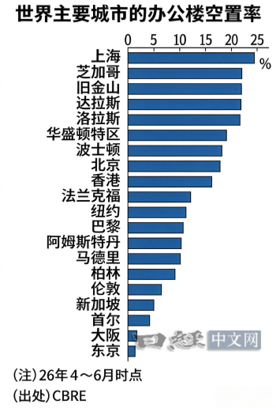
背景与关键数据
- 空置率 = 空着没租出去的面积 ÷ 总面积，是写字楼市场供需最直观的指标。通常 10% 以下算健康，15–20% 以上就意味着供过于求、租金面临下行压力。
- 日经提到的背景：外资企业撤资/缩减规模，减少了对高端写字楼的需求。
- 持有结构：中国写字楼多由国有企业等持有，空置率上升不会马上伤到财务（可以硬扛、账面不重估），但长期若供过于求持续，租金下行会传导到整个市场，民营业主（负债率更高、现金流更紧）首当其冲。
图片解读
图 1：横向条形图“世界主要城市的办公楼空置率”（来源 CBRE，2026 年 4–6 月，单位 %）。从高到低大致是：上海约 24.5、芝加哥约 22、旧金山约 22、达拉斯约 22、洛杉矶约 21.5、华盛顿特区约 19、波士顿约 18、北京约 17.9、香港约 16，然后是法兰克福约 12、纽约约 11、巴黎约 10.5、阿姆斯特丹约 10、马德里约 10、柏林约 9、伦敦约 6、新加坡约 5、首尔约 4、大阪约 2、东京约 1.5。这张图里一个很有意思的细节：美国的几个大城市（芝加哥、旧金山、达拉斯、洛杉矶）空置率也在 20% 以上（远程办公的后遗症），而东京、大阪、首尔、新加坡几乎“满租”。所以中国写字楼的问题不是孤例，是“全球办公楼分化”中偏差的一端。
为什么重要 / 含义
写字楼空置率是商业地产的“体温计”：空置率高 → 租金下行 → 资产估值下降 → 业主偿债压力上升 → 银行商业地产贷款有坏账风险。对中国来说，叠加住宅地产的长期调整，商业地产是另一个“慢性压力点”。对全球来说，美国写字楼同样在去库存，是全球银行业（特别是区域性银行）的潜在风险之一。Jason 贴这张图，大概是想让大家从“全球比较”的角度看中国房地产问题，也呼应帖 18 的“地方财政吃紧”。
延伸知识
资本化率（Cap Rate）：写字楼估值常用“年租金净收入 ÷ 资产价格”来看，租金下降、空置上升会让净收入下降，价格就要重估。“国企持有 = 不会立刻出问题”背后的逻辑：国企资产负债表有政府隐性支持，不会像民企一样因为现金流紧张被迫抛售，但这意味着问题被“冻结”而不是“出清”，可能拖得更久（类似日本 1990 年代的“僵尸资产”问题）。
帖 12 · 美西 2026-10-20 13:43（北京 10-21 04:43）· #金融#
粤开证券指出：中国名义利率不高，但扣掉通胀后的“实际政策利率”自 2026 年 3 月起持续高于美国——高科技行业靠股债融资，不怕利率；房地产等靠银行贷款的传统行业，实际融资成本仍偏高，金融环境对它们依然偏紧。读全文收起
帖子原文
粤开： 对于中国而言，尽管我国政策和市场利率水平稳中有降，但考虑通胀因素后的实际利率水平不低，今年3月以来持续性高于美国。高技术产业更多依赖股权、债券等直接融资，在行业高景气和良好发展前景的支撑下，各类资金持续流入，对利率相对不敏感，投资保持较快增长；而对于房地产等传统行业，企业投资及居民购房主要依赖银行信贷，尽管贷款利率处于历史低位，但房地产行业现金流持续偏弱、剔除通胀后的实际利率水平仍偏高，实际金融条件可能依然偏紧，尚不足以扭转行业预期偏弱、房价总体承压的局面。#金融#
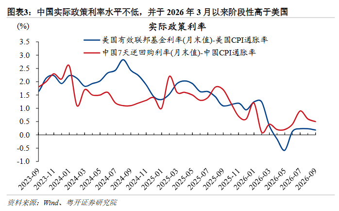
背景与关键数据
- 实际利率 = 名义利率 - 通胀率。名义利率是你看到的借款利率；实际利率才是你真正承担的、扣掉“钱变毛”之后的成本。
- 帖子的论点：中国贷款利率已经处于历史低位，但因为通胀（CPI）很低，实际利率并不低；这使得依赖银行信贷的行业（房地产、传统制造业）感受到的金融条件偏紧。
- 高科技行业主要靠直接融资（股权、债券）+行业景气，资金持续流入、对利率不敏感，所以投资增长快；这造成了“行业冷热不均”的结构性分化。
图片解读
图 1：折线图“图表 3：中国实际政策利率水平不低，并于 2026 年 3 月以来阶段性高于美国”，纵轴为 %，横轴为 2023-09 到 2026-09 月度，数据来源 Wind、粤开证券研究院。
- 蓝线：美国有效联邦基金利率（月末值）- 美国 CPI 通胀率；红线：中国 7 天逆回购利率（月末值）- 中国 CPI 通胀率。
- 前两年两条线在 0.5–2.7% 之间来回交叉，整体下行；2026 年 3 月前后美国线（蓝）掉到约 0.3%，5 月最低约 -0.6%（美国 CPI 在油价上涨影响下攀升，实际利率转负）；之后回升到约 0.2%；红线（中国）2026 年 3 月以后回到 0.2–0.9% 区间，9 月约 0.5%，阶段性高于美国。
- 注意：绝对水平其实都很低（美国约 0.2%，中国约 0.5%），“高于”只是相对差距，不是说中国利率高。
为什么重要 / 含义
这是“为什么降息政策效果有限”的一种解释：中国名义利率下来了，但通胀更低，实际利率没怎么降；叠加房地产现金流弱、居民资产负债表受损，降息传导不畅。它也解释了帖 6（央行改框架）背后的动机：央行想要更精准的短端利率定价，也许就是为了让政策传导更有效。需要提醒的是（我的补充）：如果用“PPI”（企业出厂价）而不是 CPI 去折算，企业视角的实际利率会低得多（因为帖 7 里 PPI 已达 +5.0%）——这也是为什么上游资源企业不觉得融资贵，而消费者/房地产却感觉贵。
延伸知识
费雪方程：名义利率 ≈ 实际利率 + 预期通胀。通胀预期低，实际利率就容易偏高——这就是日本 1990 年代“通缩 + 名义零利率”但实际利率仍高的困境（“流动性陷阱”）。直接融资 vs 间接融资：间接融资指通过银行借贷，直接融资指企业直接发股票/债券向市场融资；一个国家的科技产业越依赖直接融资，就越不受银行信贷周期影响，但对股市情绪和风险偏好更敏感。
帖 13 · 美西 2026-10-20 14:03（北京 10-21 05:03）· #金融#
日本国债终于有人“接刀”了：本财年上半年（4–9 月）日本投资者买本国国债的规模创 17 年来最高，周二 20 年期国债拍卖需求史上最强——说明在收益率升到 1990 年代中期以来高位之后，国内资金（银行、养老金代理）重新觉得“有钱赚”；下周日本央行议息是下一道考验。读全文收起
帖子原文
bloomberg： 日本投资者在本财年上半年购买本国政府债券的规模升至17年来最高水平。一些分析师认为，这反映出养老基金正在调整资产组合配置。周二举行的日本20年期国债拍卖录得有史以来最强劲的需求，进一步表明日本国内债券的投资需求相当旺盛。本月早些时候，日本20年期国债收益率升至1990年代中期以来未见的水平，而30年期国债收益率则创下历史新高。道富表示日本国债现在重新具备投资吸引力。投资者的心态正在逐渐从“不去接正在下落的刀子”，转变为“持有债券、等待期间也能获得不错的收益”。不过，拍卖结果中还有一个值得关注的细节：超过83%的投标来自身份未被披露的买家。这一比例可能意味着大型投资者积极参与，包括大型银行和日本政府养老投资基金（GPIF）。彭博Markets Live策略师Mark Cranfield评论：20年期日本国债拍卖出现如此强劲的需求，令人震惊。这确实创下该期限国债拍卖的历史纪录，并可能推动收益率曲线更快趋于平坦。日本国债市场即将面临的重要考验，是下周举行的日本央行货币政策会议。市场普遍预计日本央行维持政策利率不变。隔夜指数掉期（OIS）市场所反映的本次加息概率约为6.2%。不过，交易员将密切关注植田和男在政策决定公布后的记者会，寻找未来进一步收紧货币政策的速度和空间方面的信号。#金融#
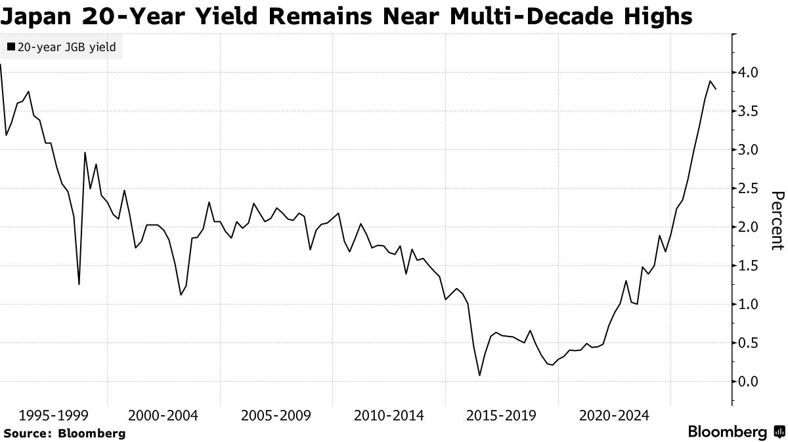
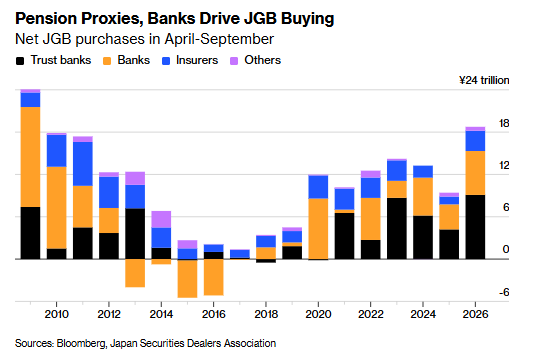
背景与关键数据
- 收益率与价格的关系：债券价格下跌，收益率上升。“不去接正在下落的刀子”（Don't catch a falling knife）指的是价格在跌时不要抄底；现在，投资者的态度变成“买了拿着，等的过程中也有不错的票息”。
- 日本 20 年期国债收益率本月早些时候升到 1990 年代中期以来最高水平，30 年期收益率创历史新高。
- 拍卖指标：拍卖需求强，一般用“投标倍数（bid-to-cover）”衡量，即认购额 ÷ 发行额，越高越抢手。帖里说这次是该期限拍卖的历史纪录。
- “超过 83% 的投标来自身份未披露买家”：这类投标往往是大型机构，比如大银行和 GPIF（日本政府养老投资基金，全球最大养老基金之一）。
- 隔夜指数掉期（OIS）：可以从其价格反推市场对央行下一次议息会议“加息概率”的预期；目前定价下周日本央行加息概率仅约 6.2%，即市场认为基本会按兵不动。
- Mark Cranfield 的观点：强劲需求可能推动收益率曲线更快变平——即长端收益率下降（或短端上升）、长短期收益率差缩小。
图片解读
- 图 1：Japan 20-Year Yield Remains Near Multi-Decade Highs（日本 20 年期收益率仍在数十年高位附近，彭博）：黑色折线，季度数据，横轴 1995–2026，纵轴 % 。1995 年左端在约 4.1%，之后持续下行，2000 年后在 1.2–2.5% 区间，2015–2019 年一度低到约 0.1%，2020 年起一路攀升，最右端峰值约 3.9%、最新约 3.8%——这是一条“从 0 到 3.9%”的陡峭上升曲线。
- 图 2：Pension Proxies, Banks Drive JGB Buying（养老金代理机构和银行推动日本国债购买）：堆叠柱状图，2009–2026 年每年 4–9 月的日本国债净买入额（万亿日元）。颜色：黑=信托银行（养老基金的代理人）、橙=银行、蓝=保险公司、紫=其他。2026 年总净买入约 18–19 万亿日元，仅次于 2009 年的约 22 万亿（帖里“17 年来最高”），其中信托银行约 9、银行约 6、保险约 3；2013–2017 年银行曾大幅净卖出（橙色在 0 线下方），如今回来了。
为什么重要 / 含义
日本国债市场是全球利率的“压舱石”之一：日本是全球最大的海外投资者群体之一，如果国内债券收益率高到足以吸引日本资金“留在国内”，海外资产（包括美债）可能面临资金回流日本的压力。这是近两年“日本债市动荡会不会冲击全球债市”的核心担忧。这次强劲的拍卖说明：日本国内买盘能吸收供给，短期缓解了这个担忧。对日元：日本央行加息预期低 + 长端收益率高，对日元汇率的影响取决于央行是否释放继续收紧的信号。下周的植田和男记者会是关键事件。结合帖 15（美债 5.07%）和帖 9（美债安全资产地位），这一条构成了“全球长债收益率为什么都在高位”的另一块拼图。
延伸知识
国债收益率曲线控制（YCC）的退出：日本央行曾长期把 10 年期国债收益率压在 0 附近（2016–2024），代价是日本国债市场几乎失去“价格发现”功能；退出 YCC 后，长端收益率逐步由市场决定，才出现了今天的“30 年期创纪录”。曲线变平（flattening）：长短端收益率之差收窄，常见于央行加息周期（短端涨）或长端需求旺盛（长端跌）；极端情况是“倒挂”（短端高于长端），传统上被视为衰退信号。
帖 14 · 美西 2026-10-20 14:06（北京 10-21 05:06）· #政策分析#
英国商业大臣说，愿意讨论对中国电动车征收关税，换取英国企业进入欧盟“欧洲制造”采购机制的资格——英国正在“中国电动车市场”与“欧洲市场准入”之间做交易；最终以“英国自身利益”为准，下个月英欧峰会前这是政府首要议程。读全文收起
帖子原文
bloomberg： 英国商业大臣乔纳森·雷诺兹表示，他对通过向中国电动汽车征收关税，以换取英国企业获得更广泛的欧洲市场准入持开放态度。不过，他强调，最终决定将基于英国自身利益，而不是欧盟提出的要求。英国政府目前面临政治压力，要求其与布鲁塞尔保持一致，对来自中国、享受政府补贴的进口汽车征收关税，以换取参与欧盟范围内采购机制“欧洲制造”的资格。英国首相安迪·伯纳姆多次要求英国能够参与这一计划。在下个月举行的英欧峰会之前，就这一领域达成协议已成为英国政府的首要优先事项。#政策分析#
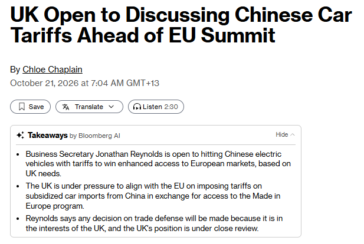
背景与关键数据
- 帖里人物与机制：商业大臣乔纳森·雷诺兹（Jonathan Reynolds）、首相安迪·伯纳姆（帖里的称呼）；欧盟的“欧洲制造（Made in Europe）”采购机制，大意是欧盟公共采购优先考虑欧洲本地生产的产品（具体规则帖子没有展开）。
- 欧盟自 2024 年起对中国产纯电动车征收反补贴税（在基础 10% 关税之上叠加，具体税率因车企不同，约 17%–35%）（我的补充）；而据我所知截至 2025 年，英国对中国电动车没有这类额外关税。帖里说，英国面临要求“与布鲁塞尔保持一致”的政治压力。
- 呼应帖 3：野村把“欧盟对中国混动车出口减半”列为 2027 年中国出口的风险之一——如果英国也加入，将进一步压缩中国汽车出口的西欧版图。
图片解读
图 1：彭博 10 月 21 日（GMT+13 时区）文章截图，标题“UK Open to Discussing Chinese Car Tariffs Ahead of EU Summit”（英国愿在欧盟峰会前讨论对中国汽车征税）；“Takeaways by Bloomberg AI”三条要点：雷诺兹愿意对中国电动车征关税以换取更多欧洲市场准入；英国面临与欧盟对齐的压力以换取“Made in Europe”计划的资格；任何贸易防御决定将以英国利益为准。
为什么重要 / 含义
这条的重点是“贸易阵营”的变化：中国电动车出海的路正在被关税和本地化要求一点点收窄。对中国车企来说，英国是欧洲最大的单一右舵市场之一，若对齐欧盟，会影响比亚迪、名爵（MG，上汽旗下）等品牌；对英国来说，是“进口便宜电动车促进电动化”和“接入欧洲供应链/采购体系”之间的取舍。与帖 5 的中国新能源车内需订单下滑放在一起看，就是“内需放缓 + 海外受限”的双重压力。
延伸知识
反补贴税（CVD）与反倾销税：反倾销针对“出口价格低于正常价格”，反补贴针对“出口企业得到本国政府补贴”，两者都是 WTO 框架下允许的贸易救济措施。贸易转移与关税传导：一国对某国商品加税，往往导致第三方国家（如墨西哥、东南亚）转口或设厂，使贸易格局重新洗牌——这是近年“供应链多元化”的底层逻辑。
帖 15 · 美西 2026-10-20 14:14（北京 10-21 05:14）· #金融#
油价从高点回落，美债 10 年期收益率回到 5.07%；与此同时，新兴市场股票的预期盈利飙升，但估值反而相对美股折价约 53%，是彭博 2006 年有数据以来最大。（第 4 张图是 CME 美联储利率期货概率表，反映市场对未来加息路径的定价。）读全文收起
帖子原文
bloomberg： 随着基准油价从数周来最高点回落，周二10年期美债收益率降至5.07%。 新兴市场股票的盈利预期正在大幅上升，使其相对于美国股票的估值降至历史罕见的低水平。这可能意味着，长期投资者正在迎来一个潜在的买入机会。MSCI新兴市场指数目前的未来12个月预期市盈率略低于9倍，而标普500指数的对应市盈率约为19倍。这意味着新兴市场股票相对于美国股票存在约53%的估值折价。自彭博2006年开始汇编相关数据以来，这一折价幅度创下历史最高纪录。#金融#
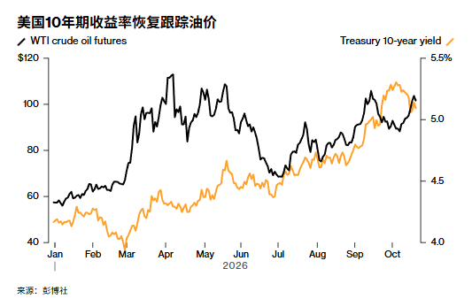
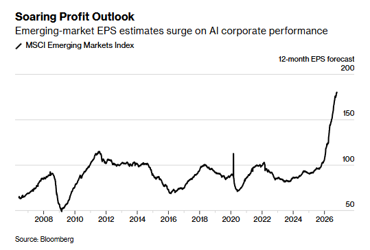
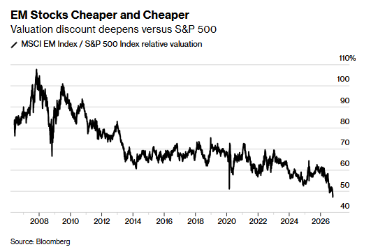
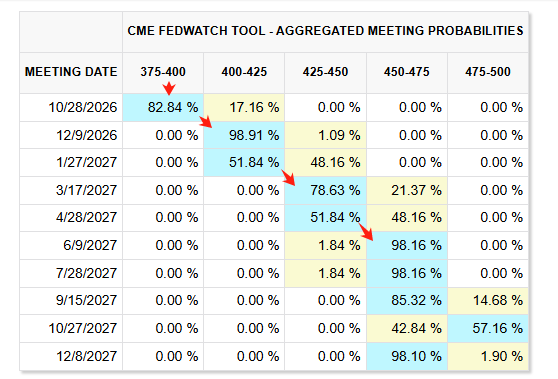
背景与关键数据
- 预期市盈率（Forward P/E）：股价 ÷ 未来 12 个月预期每股盈利，是常用的估值指标。MSCI 新兴市场指数约 9 倍（略低于 9），标普 500 约 19 倍 → 新兴市场的估值是美股的约 47%，即“折价 53%”。
- 为什么新兴市场盈利预期上升：图中标题写明是“AI 企业业绩”驱动（新兴市场指数里台湾、韩国的半导体与硬件权重很大）。
- 帖子第一句：油价回落 → 10 年期美债收益率回到 5.07%。从图 1 可以看出，今年美债收益率重新“跟着油价走”：油价涨 → 通胀预期升 → 加息预期升 → 长债收益率升。
图片解读
- 图 1 · 美国 10 年期收益率恢复跟踪油价（彭博）：黑线 = WTI 原油期货（左轴，美元），橙线 = 美国 10 年期国债收益率（右轴，%），2026 年 1 月至 10 月。WTI 从 1 月约 57 美元，3–4 月冲高到约 110–115 美元，7 月回落到约 68 美元，9–10 月再次升至约 95–105 美元；10 年期美债收益率 1 月约 4.3%，3 月前后一度回落到约 4.0%（油价暴涨时收益率反而跌，说明当时市场更多交易的是避险/衰退担忧），之后随着油价回升一路抬升，10 月高点约 5.2–5.3%，目前回到 5.07%。标题“恢复跟踪油价”指的是：两者的正相关关系又回来了（通胀逻辑重新占主导）。
- 图 2 · Soaring Profit Outlook（盈利展望飙升）：MSCI 新兴市场指数未来 12 个月每股收益（EPS）预测，2006–2026。2009 年金融危机时低至约 45，2011 年约 110，2016 年约 65，2018 年约 100，之后在 85–100 之间徘徊，2026 年直线飙升到约 175（几乎翻倍）。
- 图 3 · EM Stocks Cheaper and Cheaper（新兴市场股票越来越便宜）：MSCI 新兴市场指数相对标普 500 的相对估值，2006 年约 80，2007 年高点约 105，之后趋势性下降到 2014–2019 年的约 65–70，2026 年跌到约 47，创历史新低（即上面说的 53% 折价）。
- 图 4 · CME FedWatch 工具：各次议息会议的利率区间概率：行=会议日期（2026-10-28 到 2027-12-08），列=联邦基金利率目标区间（单位：基点，如“375-400”即 3.75%–4.00%），红色箭头串起每次会议最可能的区间。读法：
- 2026-10-28：“375–400”概率 82.84%、“400–425”概率 17.16%——假设当前区间是 3.75–4.00%（该表这一行最大概率落在这一档），则大概率按兵不动，小概率加息 25 个基点；
- 2026-12-09：“400–425”概率 98.91%，即到年底大概率已加息一次；
- 2027-01-27：400–425 约 52% / 425–450 约 48%；2027-03-17：425–450 约 79%；2027-04-28：425–450 约 52% / 450–475 约 48%；2027-06-09：450–475 约 98%；之后 2027-09-15 450–475 约 85%、2027-10-27 约 43% / 475–500 约 57%；2027-12-08：450–475 约 98%（最后一行概率重新落回较低区间，表示后期有降息预期）。
- 总体含义：市场在定价一条缓慢的加息路径，到 2027 年中累计约 75 个基点。（表格只给出概率，没有给出“当前区间”，上述解读建立在“当前区间 3.75–4.00%”的假设上。）
为什么重要 / 含义
这四张图拼在一起讲了一个“全球资产定价”的故事：油价高 → 通胀担忧 → 市场押注美联储加息 → 美债收益率升到 5% 以上；与此同时，AI 把新兴市场（特别是亚洲科技供应链）的盈利预期推高，但资金仍然偏爱美股，使得新兴市场相对估值被压到历史低位。这样的组合通常是“逆向投资者”关注的潜在机会：估值低 + 盈利预期上调 = 估值修复空间；风险是美债收益率高、美元强，往往对新兴市场资金流不利。需要提醒（我的补充）：这是估值与情绪的统计描述，并不是买入建议。
延伸知识
估值折价不等于“便宜”：新兴市场长期折价有它的结构性原因——公司治理、汇率风险、政策不确定性、行业构成（周期股、金融股占比高）。当前折价扩大的另一层原因是美股被 AI 巨头抬高（分母变大）。FedWatch 怎么读：它是用联邦基金利率期货的价格反推市场对每次会议的加/降息概率，不是美联储的官方预测；但它很有用，因为反映的是“真金白银押注”出来的预期。
帖 16 · 美西 2026-10-20 14:19（北京 10-21 05:19）· #其他国家经济#
美国“特朗普账户”（给儿童开的、投资美国股票指数的账户）获得富豪和企业纷纷加码：马斯克送 SpaceX 股票、达利欧给康州 30 万名孩子每人 250 美元、戴尔夫妇捐 62.5 亿美元；政府初始 1,000 美元默认买标普 500 指数 ETF，国会预算办公室估计未来十年联邦成本约 150 亿美元。读全文收起
帖子原文
bloomberg： 哪些美国富豪和企业正在参与特朗普的儿童投资账户计划？ 马斯克计划赠送SpaceX股票，使特朗普账户的支持者名单又增加了一位知名人物。桥水基金创始人达利欧表示，其基金会将向康涅狄格州约30万名符合条件的儿童，每人提供250美元。贝莱德则表示，将为符合条件的员工子女提供与联邦政府相同金额的1,000美元启动资金。戴尔夫妇承诺捐赠62.5亿美元，戴尔科技创始人迈克尔·戴尔与苏珊·戴尔承诺捐赠62.5亿美元。这笔资金计划帮助约2,500万名年龄不超过10岁的美国儿童。这些儿童因为出生时间较早，无法获得政府针对2025—2028年出生儿童的初始资金。捐赠主要面向居住在家庭收入中位数低于15万美元的邮政编码地区的儿童。每个符合条件的账户将获得250美元。虽然250美元即使经过几十年的复利增长，也不太可能单独构成一笔巨大的财富，但戴尔表示，希望这项捐赠能够鼓励其他人共同参与。此外，Robinhood、SoFi、道富、康卡斯特和Chipotle等企业，也宣布将为员工子女提供与政府1,000美元启动资金相匹配的供款。 美国财政部表示，特朗普账户的初始供款将投资于道富旗下的SPDR Portfolio S&P 500 ETF，这是一只追踪标普500指数的低成本ETF。财政部还选定了四只ETF，作为未来可能提供的投资选项：贝莱德iShares Core S&P 500 ETF；贝莱德iShares Core S&P Total U.S. Stock Market ETF；Vanguard Total Stock Market ETF；道富SPDR Portfolio S&P 1500 Composite Stock Market ETF。这些产品主要投资美国大型或广泛市场股票。根据美国国会预算办公室的估计，特朗普账户计划将在未来十年耗费联邦政府约150亿美元。#其他国家经济#
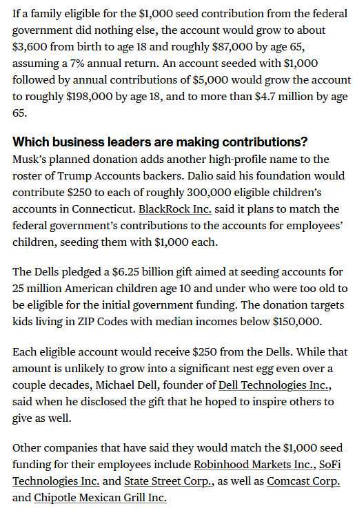
背景与关键数据
- 特朗普账户：根据 2025 年通过的税改法案（背景补充），2025–2028 年出生的美国儿童可获得联邦政府一次性 1,000 美元的启动资金，账户资金投资于美国股票指数基金，长期复利增长，孩子成年后可使用。
- 参与者：马斯克计划赠送 SpaceX 股票；达利欧基金会向康涅狄格州约 30 万名符合条件的儿童每人 250 美元；贝莱德给员工子女配套 1,000 美元；戴尔夫妇承诺 62.5 亿美元，面向约 2,500 万名 10 岁及以下、因为年龄太大没资格拿政府 1,000 美元的儿童，每人 250 美元，限家庭收入中位数低于 15 万美元的邮政编码地区；Robinhood、SoFi、道富、康卡斯特和 Chipotle 等也宣布为员工子女配套。
- 投资标的：初始供款投资于道富 SPDR Portfolio S&P 500 ETF；备选 ETF 还有四只（iShares Core S&P 500、iShares Core S&P Total U.S. Stock Market、Vanguard Total Stock Market、SPDR Portfolio S&P 1500 Composite）。
- 成本：国会预算办公室（CBO）估计未来十年联邦政府成本约 150 亿美元。
- 效果有限但象征意义大：250 美元即使复利几十年也不会变成巨额财富，戴尔本人也说是希望带动更多人参与。
图片解读
图 1：彭博文章截图，核心是一个复利例子（按 7% 年回报假设）：
- 一个有资格领联邦 1,000 美元启动资金的家庭，如果什么都不再做，账户到 18 岁约 3,600 美元，到 65 岁约 8.7 万美元；
- 如果在 1,000 美元基础上每年再追加 5,000 美元，到 18 岁约 19.8 万美元，到 65 岁超过 470 万美元。
- 下面一段是“哪些商界领袖在捐款”的内容（与帖子文字一致）。 这个例子的关键信息：复利的威力来自“时间 + 持续投入”。（我的补充：470 万美元那条，如果理解为 18 岁后不再追加、只复利到 65 岁，才与 19.8 万美元 × 7% 复利约 47 年相符。）
为什么重要 / 含义
这是一个“全民持股”的政策实验：让每个孩子从出生就持有美国股票资产，既是社会政策（缩小财富差距），也是对美股的长期需求来源。资金规模（联邦 150 亿美元 + 私人捐赠）相对美股市值是小数目，直接买盘影响有限，但长期看会增加“美国居民持股比例”，并且在政治上让更多人与美股涨跌“利益绑定”。这条也与帖 9 的“资金从安全资产转向风险资产”形成呼应：美国居民资产配置越来越偏向股票。
延伸知识
复利与“72 法则”：用 72 除以年化收益率，大致就是资产翻倍所需的年数——7% 的回报下约 10 年翻一倍，65 年就是翻了 6 次多，整体放大约 80–90 倍。这就是为什么出生时的 1,000 美元，到 65 岁能长到图里的约 8.7 万美元。被动指数投资：默认把钱放进低费率的标普 500 ETF，是因为长期看大多数主动基金跑不赢指数——这也是美国 401(k) 养老金越来越多采用目标日期基金/指数基金的背景。
帖 17 · 美西 2026-10-20 14:25（北京 10-21 05:25）· #其他国家经济#
美印贸易协议“接近敲定”（特朗普说谈了一年多），同时美国在做另一件事：劝印度信实工业多炼委内瑞拉原油，减少对俄罗斯油的依赖，缓解伊朗冲突造成的供应紧张。读全文收起
帖子原文
bloomberg： 美国正在尝试通过贸易谈判、能源供应和战略合作，重新调整与印度的经济关系。 周二，在白宫接受记者采访时，特朗普被问及美印达成协议的前景。特朗普表示，在经过一年多的谈判之后，美国与印度已经接近最终敲定一项贸易协议。最近，美国和印度官员都对达成协议的可能性发表了乐观评论。上周，在新德里举行的彭博新经济论坛上，美国驻印度大使塞尔吉奥·戈尔）表示：主要问题都已经解决了。此前，印度外交部长苏杰生也曾表示，贸易谈判取得的进展令他感到鼓舞。 美国正试图说服印度信实工业集团加工更多委内瑞拉原油，实现能源多元化。俄罗斯仍然是今年印度最大的石油供应国。俄罗斯对印度的原油供应量已经达到接近每日200万桶的纪录水平，约占印度原油进口总量的40%。与此同时，印度从委内瑞拉进口的原油已经增加至2019年以来最高水平，但规模仍然相对较小，约为每日18.7万桶。#其他国家经济#
背景与关键数据
- 贸易谈判：特朗普称已接近最终敲定；美国驻印度大使塞尔吉奥·戈尔说“主要问题都解决了”；印度外长苏杰生表示进展令他“感到鼓舞”。（背景补充：2025 年美国曾对印度加征高额关税，其中一部分与印度购买俄罗斯石油有关，这是谈判的主要摩擦点之一。）
- 能源数据：俄罗斯对印度的原油供应量达到接近 每日 200 万桶 的纪录，约占印度原油进口总量的 40%；印度从委内瑞拉进口增加到 2019 年以来最高，约 每日 18.7 万桶，规模仍然小得多。
- 图片补充（彭博 AI 要点）：美国国务卿卢比奥访问孟买，将与信实董事长穆克什·安巴尼及团队讨论加工委内瑞拉原油的可能性；卢比奥称印度是“炼油超级大国”，有能力处理委内瑞拉“重质、含蜡、难以加工”的原油；背景是“因伊朗冲突而动荡的市场”。
图片解读
图 1：彭博文章截图，标题段落“US looking to persuade India's Reliance Industries Ltd. to refine more Venezuelan crude”，三个 AI 要点：美国想说服信实炼更多委内瑞拉原油、以便给被伊朗冲突搅乱的市场补充供给；卢比奥访印期间会与信实讨论此事；卢比奥表示信实可以帮助印度在委内瑞拉增产的背景下实现能源来源多元化，并指其拥有庞大炼油产能。
为什么重要 / 含义
这是“能源地缘 + 贸易”结合的一笔棋：美国想用市场份额（让印度买更多非俄罗斯油）换取印度对俄油的依赖下降，同时换来贸易协议。对油价来说，如果印度把更多采购转向委内瑞拉重质原油，会改变全球重质油的供需；对印度来说，能源安全和贸易关系需要平衡；对中国来说，作为另一个大型能源进口国，需要观察全球油流向的重新分配。与帖 15（油价与美债收益率的联动）合在一起看，能源供给的任何变化都会通过通胀预期传导到利率。
延伸知识
重质含硫原油 vs 轻质低硫原油：炼厂的设备决定了能处理什么油。委内瑞拉原油又重又含蜡，只有具备“深度加工能力”（如焦化装置）的炼厂才能处理，信实在印度西海岸的贾姆讷格尔炼油厂是世界上最大的炼油综合体之一，所以美国才来找它。制裁与能源贸易：制裁往往不会让油“消失”，而是让油流向发生改变、折价和中间商增加，这是近几年全球能源贸易“重新绕路”的主因。
帖 18 · 美西 2026-10-20 15:14（北京 10-21 06:14）· #TAX#
澎湃新闻调查：江西宜春丰城市一个乡政府，因为打算卖地还钱但土地多次“流拍”，欠一家建筑企业 5000 多万元工程款，败诉后还不上——“都是流拍惹的祸”，是地方财政靠土地的又一个缩影。读全文收起
帖子原文
澎湃： 都是流拍惹的祸 #TAX#
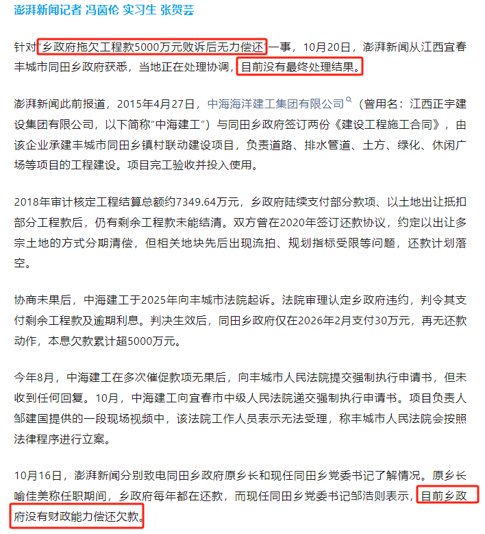
背景与关键数据
按截图内容梳理时间线：
- 2015 年：该乡政府与一家建工公司签订两份《建设工程施工合同》，承建乡镇联动建设项目（道路、排水、绿化、休闲广场等），完工验收并投入使用。
- 2018 年：审计核定工程结算总额约 7349.64 万元；乡政府陆续用部分款项和土地出让抵扣部分工程款，仍有剩余。
- 2020 年：双方签订还款协议，约定以出让多宗土地的方式分期清偿；但相关地块先后出现流拍、规划指标受限等问题，还款计划落空。
- 2025 年：施工企业起诉，法院认定乡政府违约，判令支付剩余工程款及逾期利息。判决生效后，乡政府仅在 2026 年 2 月支付 30 万元，之后再没还钱，本息欠款累计超 5000 万元。
- 2026 年 8 月：企业向法院提交强制执行申请，未获回复；10 月向宜春市中级法院递交强制执行申请，现场视频显示法院工作人员称“无法受理”，称丰城市法院会按程序立案。
- 10 月 16 日：澎湃新闻分别致电该乡政府原乡长和现任党委书记。原乡长称任职期间政府“每年都在还款”；现任党委书记表示“目前乡政府没有财政能力偿还欠款”（红框）。
- 10 月 20 日：澎湃新闻从当地获悉，当地正在处理协调，目前没有最终处理结果（红框）。
图片解读
图 1：澎湃新闻稿件截图，红框标出了两个关键句：“乡政府拖欠工程款 5000 万元败诉后无力偿还”一事当地正在协调，没有最终结果；以及“目前乡政府没有财政能力偿还欠款”。整篇文章的叙事线非常清楚：施工在前、付款靠卖地、土地流拍导致付款断档、法院判决后仍无力执行。
为什么重要 / 含义
这是“地方财政压力”最具体的微观样本：
- “土地财政”模式遇冷：地方政府过去靠卖地收入还账、搞建设，现在地产低迷，土地卖不出去（流拍），现金流断裂。
- 欠款链条：政府 → 工程企业 → 农民工/材料商，一环断环环断；拖欠企业账款是 2024–2026 年多次被点名的风险点。
- 执行难：判决生效后政府仍无钱可还，反映了基层财政的“硬约束”（县乡一级财力最紧张）。
- 与帖 2 呼应：宏观层面是“债务/GDP 比值越来越高”，微观层面就是这种“有钱的借不动、没钱的还不起”的县乡政府。
Jason 的标题“都是流拍惹的祸”，既是总结，也带着点冷幽默。
延伸知识
土地财政：地方政府一部分收入来自“出让国有土地使用权”，所以房地产越热，地方越有钱；一旦地产转冷，土地出让收入下降，原本靠卖地偿还的债务就出现缺口。以地抵债：政府把土地使用权给债权人抵债，听上去解决问题，实际上又要依赖土地能不能卖出去、值多少钱，一旦土地价值缩水，债务问题就会“原样返回”。隐性债务化解：中央 2024 年底推出的化债方案，主要针对地方政府及融资平台的“债务”；至于政府拖欠企业工程款这类“应付账款”能覆盖多少，取决于具体口径（这是我的补充，帖子和文章都没有提）。
帖 19 · 美西 2026-10-20 15:35（北京 10-21 06:35）· #八卦#
八卦帖：Jason 转述“财新说”一位退休后再就业的李莉被约谈（“喝茶”），牵出东旭系的旧事；他提醒“别小看皮包公司，背后可能是在为大资金洗钱（wash money）”，并附上了 2010 年“李莉门”新闻和一张工商信息穿透截图。注意：这是群里标为“八卦”的内容，涉及具体个人，我无法核实，也不替这些说法背书。读全文收起
帖子原文
财新说退休再就业的李莉去喝茶了，被翻的是东旭系的事 我在扒一扒里面聊过，不要小看很多皮包公司，它们背后wash大money 图1是搜的往年八卦 #八卦#
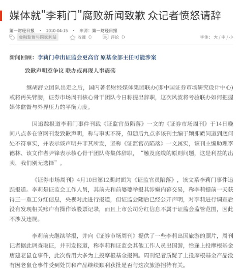
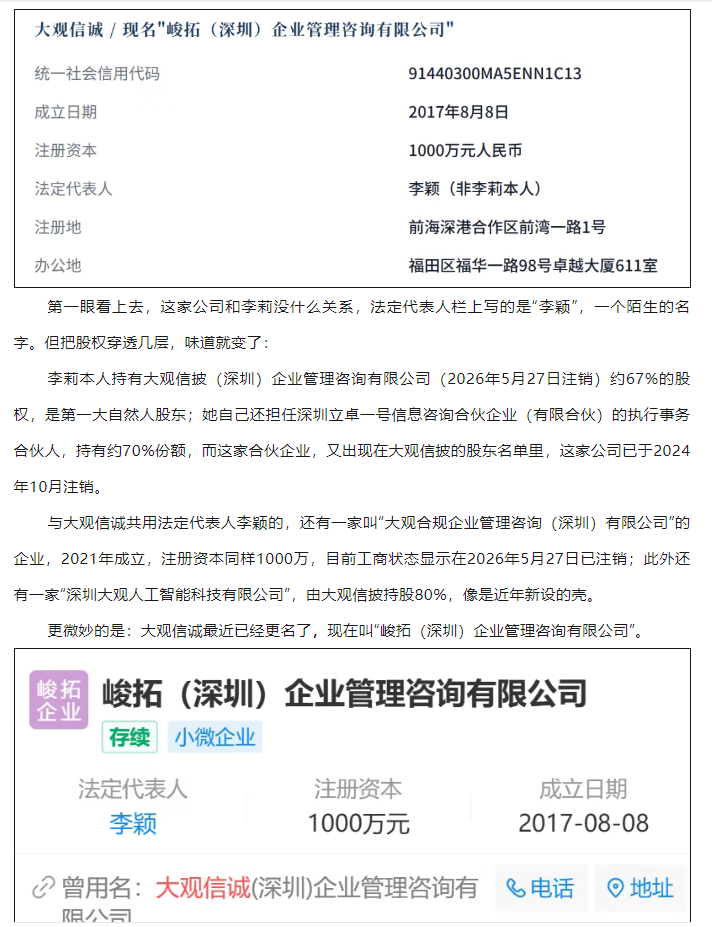
背景与关键数据
- “喝茶”：中文网络用语，指被有关部门约谈/协助调查。帖子里说的“财新说”“被翻的是东旭系的事”是 Jason 的转述；我没有核实原始报道。
- “东旭系”：一般指东旭集团及其关联上市公司，近年爆出债务、信披等问题（背景补充，不涉及对任何个人的判断）。
- 图 1（2010 年旧闻）：第一财经日报 2010 年 4 月 15 日文章《媒体就“李莉门”腐败新闻致歉 众记者愤怒请辞》。截图内容大意：《证券市场周刊》曾刊发《证监官员陷落》一文报道“李莉门”，内容涉及对一位证监会工作人员的内幕交易举报；证监会事后公开声明，称调查后没有发现相关账户有操作该股票的记录，且分红信息不属于证监会监管范围，因此“不涉及违规”；该周刊的核心团队因此事集体请辞。
- 图 2（工商信息 + 股权穿透）：展示了一家名为“大观信诚（深圳）企业管理咨询有限公司”、现名“峻拓（深圳）企业管理咨询有限公司”的公司（2017 年 8 月 8 日成立，注册资本 1000 万元，法定代表人“李颖”，非李莉本人，注册地前海深港合作区）。图中文字说：“第一眼看上去这家公司和李莉没什么关系……但把股权穿透几层，味道就变了”——据文字，李莉本人持有另一家“大观信披（深圳）企业管理咨询有限公司”约 67% 股权，是第一大自然人股东；她还担任“深圳立卓一号信息咨询合伙企业（有限合伙）”的执行事务合伙人并持约 70% 份额，而这家合伙企业又出现在大观信披的股东名单里；与大观信诚共用法定代表人李颖的还有“大观合规企业管理咨询（深圳）有限公司”（2021 年成立，注册资本同样 1000 万）；另外还有一家“深圳大观人工智能科技有限公司”由大观信诚持股 80%。文字还强调：大观信诚近期改名为“峻拓（深圳）企业管理咨询有限公司”，这几家公司里有几家在 2024–2026 年间已注销。（上述均为截图里的描述，我没有核实。）
图片解读
- 图 1：2010 年的新闻页面截图（第一财经日报，2010-04-15），是“往年的八卦”的出处，说明“李莉”这个名字在 2010 年就出现在媒体里，之后证监会声明、媒体致歉。
- 图 2：企查查/天眼查类企业信息的截图：上半部分是“大观信诚/现名峻拓”的工商登记信息（统一社会信用代码、成立日期、注册资本、法定代表人、注册地、办公地），下半部分是文字分析（“第一眼看上去没关系，但股权穿透几层，味道就变了”）和改名后的企业详情卡片（存续、小微企业、曾用名：大观信诚）。
为什么重要 / 含义
这条的“含义”不是具体某个人，而是一个识别“壳公司 / 代持”的方法论：法定代表人写的是陌生人，但沿股权链向上穿透几层，实际控制人可能是另一批人。很多资金腾挪、关联交易、利益输送会用到一连串“咨询公司、合伙企业、人工智能科技公司”等壳公司，所以监管、合规调查和尽职调查都会做“股权穿透”。对读者来说：（1）看新闻要区分“媒体转述”和“官方通报”；（2）八卦类信息最好等官方结论；（3）遇到可疑公司关系，可以通过公开的工商登记信息自己做穿透核查。
延伸知识
股权穿透（Look-through）：不只看直接股东，而是一层一层往上查，直到找到最终的自然人或国有主体（“最终受益所有人”，UBO）。反洗钱要求金融机构做“客户尽职调查（CDD）”，核心就是穿透到最终受益人。“皮包公司”：没有实际业务、人员和资产，只有一张营业执照的空壳，常被用来走账、开票、转移资金。类比：一间只有门牌号、没有办公室的“公司”，就像一个只用来接水管的“接头”，真正的水（资金）从别处来、流到别处去。
今日全图索引
| 帖号 | 时间（美西，PDT） | 主题 | 标签 | 图片文件名 |
|---|---|---|---|---|
| 帖 1 | 10-20 00:03 | 《自由的窄廊》书封 / 八卦玩笑 | 八卦 | post1_img1.jpg |
| 帖 2 | 10-20 12:12 | 自制图表：显性债务增量 ÷ 名义 GDP 增量 | 自制图表 | post2_img1.png |
| 帖 3 | 10-20 12:47 | 野村：上调 2026 中国 GDP 至 4.7%，2027 维持 4.0% | 经济数据 | post3_img1.png |
| 帖 4 | 10-20 12:52 | 野村：9 月电商停滞、线上渗透率首降 | 经济数据 | post4_img1.png |
| 帖 5 | 10-20 12:56 | 摩根士丹利：新能源车周度订单下滑 | 经济数据 | post5_img1.png |
| 帖 6 | 10-20 13:04 | 摩根大通：央行政策利率改隔夜、人民币国际化（含 PDF 附件） | 金融 | post6_img1.png |
| 帖 7 | 10-20 13:11 | 长江证券：PPI-CPI 剪刀差走阔至 4.1pct | 经济数据 | post7_img1.png、post7_img2.png、post7_img3.png |
| 帖 8 | 10-20 13:17 | 南方周末：社保欠缴首次纳入全国统一处罚基准 | TAX | post8_img1.png |
| 帖 9 | 10-20 13:30 | 彭文生：AI 经济、安全资产与美债利率、国际货币变局 | 金融 | post9_img1.png … post9_img9.png（共 9 张） |
| 帖 10 | 10-20 13:36 | 东吴：AI 取代劳动力？Token 成本 vs 人力成本 | 经济数据 | post10_img1.png、post10_img2.png |
| 帖 11 | 10-20 13:38 | 日经/CBRE：全球办公楼空置率，上海居首 | 经济数据 | post11_img1.png |
| 帖 12 | 10-20 13:43 | 粤开：中美实际政策利率对比 | 金融 | post12_img1.png |
| 帖 13 | 10-20 14:03 | 彭博：日本国债 20 年期拍卖需求创纪录 | 金融 | post13_img1.png、post13_img2.png |
| 帖 14 | 10-20 14:06 | 彭博：英国愿讨论对中国电动车加税 | 政策分析 | post14_img1.png |
| 帖 15 | 10-20 14:14 | 彭博：美债 10 年期 5.07%、新兴市场估值折价、FedWatch | 金融 | post15_img1.png … post15_img4.png（共 4 张） |
| 帖 16 | 10-20 14:19 | 彭博：特朗普儿童投资账户 | 其他国家经济 | post16_img1.png |
| 帖 17 | 10-20 14:25 | 彭博：美印贸易协议接近、信实炼委内瑞拉油 | 其他国家经济 | post17_img1.png |
| 帖 18 | 10-20 15:14 | 澎湃：乡政府欠工程款，“都是流拍惹的祸” | TAX | post18_img1.png |
| 帖 19 | 10-20 15:35 | 八卦：李莉 / 东旭系 / 壳公司股权穿透 | 八卦 | post19_img1.png、post19_img2.png |